50 saved questions rebuilt from local capture only. Missed: Q10, Q21, Q25, Q28, Q31, Q32, Q33, Q39, Q40.
Q1
moderate QID 2966
Correct
A 28-year-old man presents to the ED after multiple episodes of forceful vomiting. Chest radiograph demonstrates pneumomediastinum. What is the most appropriate next step?
AEsophagram with water-soluble contrast(87%)
BUpper endoscopy(2%)
CCT chest without contrast(3%)
DBarium swallow(5%)
ESurgical consultation without further imaging(0%)
Your answerA
Correct answerA. Esophagram with water-soluble contrast
Vital Concept
Boerhaave syndrome carries high mortality when diagnosis is delayed. Water-soluble contrast esophagram — fluoroscopic or CT-based — is the study of choice. Barium is avoided acutely due to mediastinitis risk from extravasation, but may be used after negative initial water-soluble esophagram.
Explanation
Esophagram with water-soluble contrast
Pneumomediastinum following forceful vomiting is Boerhaave syndrome until proven otherwise. Esophagram with water-soluble contrast — performed fluoroscopically or as CT esophagography — confirms perforation, localizes the site, and assesses leak extent. Both modalities show comparable diagnostic performance; fluoroscopy offers real-time dynamic assessment while CT esophagography better characterizes mediastinal and pleural contamination.
Incorrect Answers:
B. Endoscopy risks extending the perforation and introducing air into the mediastinum — it is contraindicated in suspected esophageal perforation.
C. CT without oral contrast can identify pneumomediastinum and pleural effusion but cannot confirm or localize the perforation site without a contrast esophageal phase.
D. Barium is contraindicated acutely in the setting of suspected perforation — extravasation into the mediastinum causes severe chemical mediastinitis and significantly worsens outcomes. Barium may be used in follow-up esophagaram after negative initial water-soluble contrast evaluation.
E. Surgical consultation is appropriate but should follow confirmatory imaging to guide operative planning.
Vital Concept: Boerhaave syndrome carries high mortality when diagnosis is delayed. Water-soluble contrast esophagram — fluoroscopic or CT-based — is the study of choice. Barium is avoided acutely due to mediastinitis risk from extravasation, but may be used after negative initial water-soluble esophagram.
Q2
moderate QID 22609
Correct
A 6-year-old male is referred for follow-up of suspected abnormality on outside sonographic evaluation for urinary tract infection. Which of the following is the diagnosis?
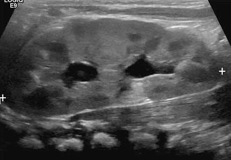
ADromedary hump(9%)
BColumn of Bertin(89%)
CWilms' tumor(2%)
DRenal cell carcinoma(0%)
Your answerB
Correct answerB. Column of Bertin
Vital Concept
Hypertrophied column of Bertin appears as a well-defined indentation in the renal sinus with echogenicity similar to adjacent renal parenchyma. It may contain hyperechoic areas representing interlobular vessels. It shows similar vascularity to normal renal parenchyma and can sometimes mimic a renal mass.
Explanation
Column of Bertin
Columns of Bertin are thickened bands of cortical tissue separating renal pyramids that may mimic renal duplication as well as renal masses. They tend to be isoechoic masses when compared to the renal cortex and are more commonly seen at the junction of the upper and middle thirds of the kidney (blue arrow). One must be careful not to mistake these for renal masses in order to prevent unnecessary biopsies and resections. Ureteropelvic duplications are a relatively common cause of urinary tract obstruction in pediatric patients. They are typically characterized by the presence of two renal pelves and/or two ureters. The duplicated ureters may drain separately into the urinary bladder or join together at some point along their length. The drainage pattern is said to be governed by the Weigert-Meyer rule, which states that the upper pole moiety most frequently inserts ectopically inferomedial to the lower pole insertion and is more likely to obstruct. The lower pole moiety more frequently inserts normally and more frequently refluxes. The upper pole moiety may insert at any point along the distal genitourinary tract including the bladder, urethra, or vagina. If the ureter inserts at any point distal to the urinary sphincter, the patient will likely present with ongoing continuous urinary leakage. The upper pole moiety insertion is frequently associated with a ureterocele at its insertion, which is often the culprit of the urinary obstruction.
Incorrect Answers:
A. Dromedary humps are isoechoic areas of renal tissue, which are typically located at the periphery of the renal cortex and produce a characteristic bulge along the periphery of the kidney. They should not be mistaken for renal tumors.
C. Wilms' tumor is a malignant tumor of the primitive metanephric blastema and is the most common abdominal neoplasm in pediatric patients aged 1-8 years old, peaking at age 3. It is associated with the deletion of a tumor suppressor gene on chromosome 11. They typically appear as large masses with heterogeneous attenuation and signal on T1- and T2-weighted MR imaging. They enhance heterogeneously and typically have well-defined margins. They tend to cause local mass effect and displace adjacent organs, and they have a characteristic “claw” of contiguous normal renal tissue, indicating their primary location within the kidney. They calcify less frequently than neuroblastomas. They are associated with certain syndromes, such as Beckwith-Wiedemann syndrome, Denys-Drash syndrome, and WAGR (Wilms' tumor, aniridia, genitourinary anomalies, and cognitive impairment). They are treated with a combination of surgical resection, chemotherapy, and radiation.
D. Renal cell carcinoma often produces an exophytic cortically-based mass and may be encountered rarely in the pediatric population. Though it is rare in this age group, it may be considered as a diagnosis when an intrarenal mass is noted.
Vital Concept: Hypertrophied column of Bertin appears as a well-defined indentation in the renal sinus with echogenicity similar to adjacent renal parenchyma. It may contain hyperechoic areas representing interlobular vessels. It shows similar vascularity to normal renal parenchyma and can sometimes mimic a renal mass.
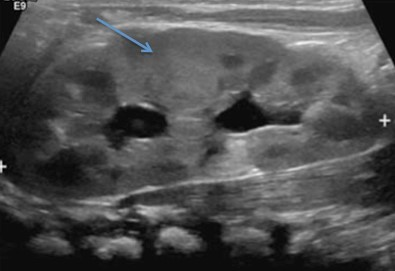
Q3
easy QID 22634
Correct
A 57-year-old male patient presents for evaluation of painless scrotal swelling. Which of the following is the diagnosis?
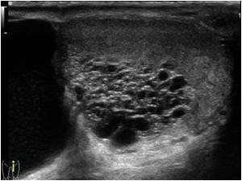
ACystic dilatation of the rete testis(97%)
BSeminoma(0%)
CVaricocele(3%)
DEpididymo-orchitis(0%)
ETesticular torsion(0%)
Your answerA
Correct answerA. Cystic dilatation of the rete testis
Vital Concept
Tubular ectasia of rete testis is a benign condition caused by obstruction of efferent ducts. It appears as hypoechoic branching cystic lesions in the mediastinum testis with no blood flow on color Doppler.
Explanation
Cystic dilatation of the rete testis
The testicular ultrasound shows a scrotal fluid collection and dilated and tubular hypoechoic intratesticular structure(s). Cystic dilatation of the rete testis is a benign finding that is usually incidentally noted on sonographic evaluation of other scrotal findings. It is usually due to varying degrees of efferent ductules with associated dilatation of the intratesticular ductules that converge at the mediastinum testis. It may be associated with spermatoceles or epididymal cysts. The typical appearance is a lace-like mixed echogenicity collection of branching ductules at the mediastinum testis with no significant internal Doppler signal.
Incorrect Answers:
B. Seminomas are malignant proliferation of germ cells in the testis and are the most common testicular malignant neoplasm. They are typically homogeneously hypoechoic on greyscale ultrasound with variable vascularity on color Doppler overlay. They are typically seen in middle-aged populations and are quite rare in the pediatric population. When seminoma is suspected, it should prompt subsequent abdominal imaging to look for intra-abdominal metastasis, as aortic chain adenopathy is the most common site of metastasis for seminomas. They are treated with radical orchiectomy with subsequent radiation, as they are quite radiosensitive.
C. Varicocele is an abnormal dilatation of the pampiniform plexus of veins in the scrotum. It may be idiopathic or related to an obstructing mass. It is more common on the left side, due to the longer pathway of drainage of the left gonadal vein and typical drainage into the left renal vein. Isolated right-sided varicoceles are unusual and should prompt workup for associated retroperitoneal masses. On imaging, they typically appear as a collection of hypoechoic or anechoic tubular structures with internal Doppler signal that is augmented during Valsalva maneuvers. They may resolve spontaneously or require treatment, as they can result in decreased sperm count or abnormal sperm function.
D. Epididymo-orchitis is an acute inflammation of the epididymis and testis. Most commonly it is related to bacterial seeding of the genital tract, and in pediatric patients it is frequently associated with a genitourinary anomaly. It may also be seen in the setting of viral infections, such as mumps. The typical imaging appearance is that of an enlarged, hypoechoic epididymis and testis with markedly increased Doppler signal. Frequently, there is an associated reactive hydrocele. Treatment most frequently involves antibiotic therapy, with surgery reserved for complications such as abscess formation.
E. Testicular torsion typically appears on ultrasound as a hypoechoic, enlarged testis with decreased internal Doppler signal. There may be a visible “twisted” appearance of the spermatic cord. There are two types of torsion: intravaginal and extravaginal. Intravaginal torsions occur in the setting of the “bell clapper” deformity, in which the tunica vaginalis is attached abnormally high on the spermatic cord, allowing the testicle to twist freely, and occluding vascular inflow. Extravaginal torsion is more common in neonatal patients and is an abnormal twisting of the spermatic cord proximal to the tunica vaginalis attachment. The treatment of suspected testicular torsion is emergent surgical exploration and orchiopexy. If found within 6 hours hr of onset, salvage rates of the affected testis are high, up to 100%. However, if found after 12 hr, salvage rates are essentially zero.
Vital Concept: Tubular ectasia of rete testis is a benign condition caused by obstruction of efferent ducts. It appears as hypoechoic branching cystic lesions in the mediastinum testis with no blood flow on color Doppler.
Q4
moderate QID 2832
Correct
A 43-year-old female presents to the emergency department with pain overlying the right maxillary sinus. She reports symptoms for 6 months. She reports no diplopia, fever, neck pain, or constitutive symptoms but reports exacerbation when eating ice cream. CT of the sinuses without intravenous contrast is performed. Which of the following is the next step in management?
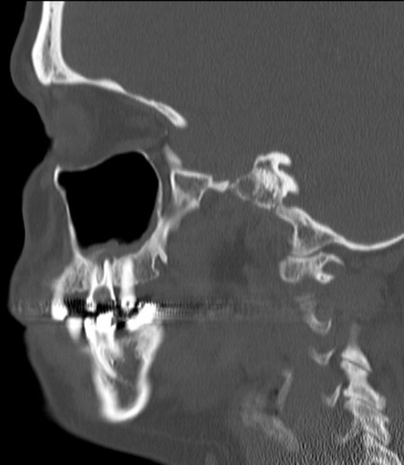
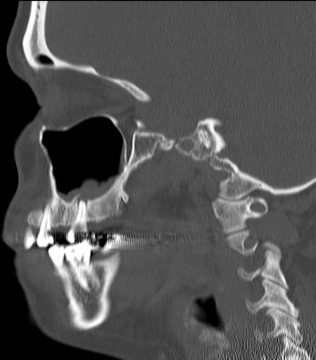
ACT of the sinuses with intravenous contrast(2%)
BMRI of the sinuses with intravenous contrast(2%)
CMRI of the sinuses without intravenous contrast(0%)
DGeneral dental consultation(87%)
Your answerD
Correct answerD. General dental consultation
Vital Concept
In odontogenic maxillary sinusitis with identified dental pathology on imaging, treatment of the dental source of infection should be prioritized—dental surgery is the core component of management and failure to address the dental cause is associated with treatment failure.
Explanation
General dental consultation
Sagittal CT images show periapical disease involving a premolar or molar with associated thickening of the maxillary sinus mucosa in that area, most compatible with odontogenic maxillary sinusitis (OMS). When CT shows periapical disease as the source of odontogenic maxillary sinusitis, the underlying dental pathology must be eliminated first. Dental surgery is the core component of OMS management—failure to address the dental source leads to treatment failure. Endoscopic sinus surgery by otolaryngology may be necessary in complex cases, especially if there is also blockage of the ipsilateral maxillary sinus drainage.
Incorrect Answers:
A. B., C. No additional imaging is indicated for this finding.
Vital Concept: In odontogenic maxillary sinusitis with identified dental pathology on imaging, treatment of the dental source of infection should be prioritized—dental surgery is the core component of management and failure to address the dental cause is associated with treatment failure.
Q5
moderate QID 39328
Correct
An attending radiologist makes one of their residents complete a remediation program after the resident failed an oral exam administered by the program at the end of their interventional rotation. Which of the following professional responsibilities is the attending radiologist most exemplifying?
ACommitment to distribution of resources(0%)
BCommitment to improving access to care(0%)
CCommitment to managing conflicts of interest(0%)
DCommitment to professional competence(90%)
ECommitment to scientific knowledge(9%)
Your answerD
Correct answerD. Commitment to professional competence
Explanation
Commitment to professional competence
The attending radiologist is regulating the profession by ensuring that their resident meets predetermined educational standards. The profession as a whole must strive to see that all of its members are competent and must ensure that appropriate mechanisms are available for physicians to accomplish this goal.
Incorrect Answers:
A. Ensuring a just distribution of finite resources is a key professional responsibility. Physicians should practice medicine that is based on wise and cost-effective management of limited clinical resources. This involves avoiding unnecessary tests and procedures that would otherwise expose patients to avoidable harm and expenses.
B. Improving access to care is a key professional responsibility. Physicians should be dedicated to making uniform and quality health care available by eliminating access barriers based on education, laws, finances, geography, or social discrimination. Improving access to care also involves health advocacy and the promotion of public health.
C. Managing conflicts of interest is a key professional responsibility. Physicians must take care to avoid exposing themselves and their patients to situations that unnecessarily compromise patient care for personal gain. Physicians have a professional and ethical obligation to publicly disclose conflicts of interest that arise over the course of their professional career.
E. Scientific knowledge is a key professional responsibility. Physicians must adhere to and practice scientific standards in their medical practice, in addition to promoting research and discovering new knowledge that can be beneficially employed by members of the profession. Physicians must protect the integrity of scientific knowledge with scientific evidence and medical experience.
Q6
moderate QID 44077
Correct
A 64-year-old female patient presents to the gynecologist with new onset vaginal bleeding. Which question is most important to ask, based on their ultrasound?
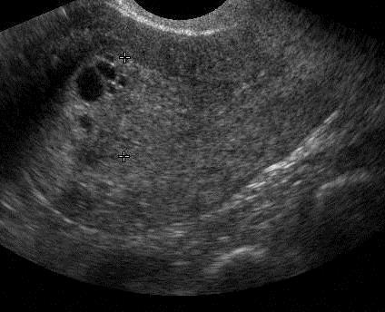
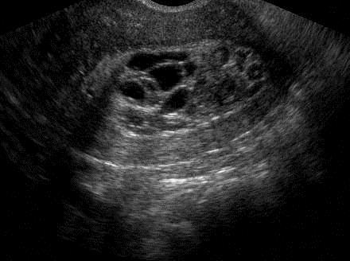
AIf the patient is being treated for breast cancer.(78%)
BThe number of children the patient has.(0%)
CIf the patient is also experiencing pain.(0%)
DIf the patient is taking hormone replacement therapy.(21%)
EIf the patient has had a prior cesarean section.(0%)
Your answerA
Correct answerA. If the patient is being treated for breast cancer.
Vital Concept
Tamoxifen increases endometrial cancer risk 2 to 3 fold, but routine ultrasound surveillance is not recommended for asymptomatic patients due to poor correlation between imaging findings and actual pathology.
Explanation
If the patient is being treated for breast cancer.
The transverse sonographic images through the uterus demonstrate a thickened, irregular, and cystic-appearing endometrium. Tamoxifen has proestrogenic effects on the endometrium and is associated with an increased prevalence of endometrial hyperplasia, polyps, and carcinoma. Up to one-half of breast cancer patients who are treated with this medication may develop an endometrial lesion within 6 to 36 months. Therefore, any patient who develops bleeding while taking tamoxifen requires evaluation. Tamoxifen causes the endometrium to appear thickened, irregular, and cystic (as seen here), and it has been reported that the extent of endometrial thickening is related to the duration of tamoxifen therapy.
Incorrect Answers:
B. Because unopposed estrogen is implicated in endometrial cancer, questions regarding nulliparity are important. However, the distinct appearance of the endometrium in this case should lead one to consider tamoxifen first.
C. The presence of pain is nonspecific and may be seen in a variety of conditions.
D. Hormone replacement therapy may cause a normally thin (sub-5mm) postmenopausal endometrial stripe to appear thickened (up to 8 to 11mm). The appearance is typically homogeneous and echogenic thickening. The risk of carcinoma is approximately 7% if the endometrium is >11 mm, and 0.002% if endometrium is <11 mm.
E. Prior surgery could cause a scarred and abnormal uterine contour, uterine band, or in premenopausal patients, predispose them to ectopic pregnancy.
Vital Concept: Tamoxifen increases endometrial cancer risk 2 to 3 fold, but routine ultrasound surveillance is not recommended for asymptomatic patients due to poor correlation between imaging findings and actual pathology.
Q7
moderate QID 39264
Correct
Which of the following is true regarding the lesion shown below?
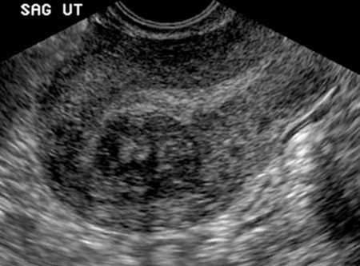
AThey are rare uterine neoplasms.(2%)
BThey are frequently an incidental finding.(88%)
CThey are not dependent on hormones.(1%)
DThey do not increase complications of pregnancy.(4%)
EThey do not undergo malignant transformation.(6%)
Your answerB
Correct answerB. They are frequently an incidental finding.
Explanation
They are frequently an incidental finding.
The sagittal uterine ultrasound shows a well circumscribed and hypoechoic intramural mass (blue arrow). These features are consistent with a uterine fibroid. They are seen frequently as incidental findings and rarely cause diagnostic dilemmas.
Incorrect Answers:
A. Uterine leiomyomas (fibroids) are benign tumors of myometrial origin and are the most common solid benign uterine neoplasm.
C. Fibroids are under hormonal influence, and for that reason they may be most symptomatic at the time of menses.
D. Because they are space-occupying masses, and are under hormonal influence, they may lead to complications in pregnancy.
E. Though very rare (0.1 to 0.5%), they can undergo malignant degeneration into leiomyosarcomas.
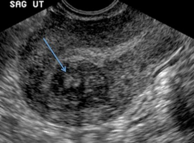
Q8
hard QID 43887
Correct
A 5-year-old male patient undergoes a magnetic resonance image (MRI) because of several weeks of vague lateral ankle pain. Which of the following two entities can be very difficult to distinguish from one another based upon clinical presentation and imaging features?
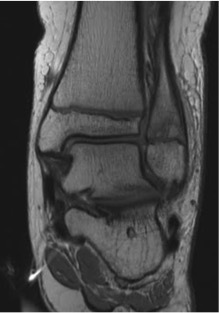
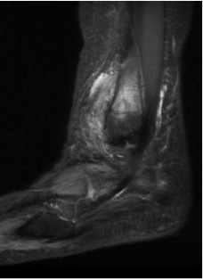
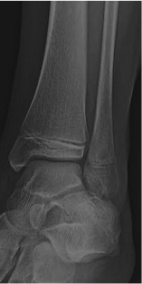
ASubacute osteomyelitis and acute osteomyelitis(16%)
BSubacute osteomyelitis and eosinophilic granuloma(74%)
CEosinophilic granuloma and primary osseous lymphoma(2%)
DEosinophilic granuloma and Ewing’s sarcoma(5%)
Your answerB
Correct answerB. Subacute osteomyelitis and eosinophilic granuloma
Explanation
Subacute osteomyelitis and eosinophilic granuloma
The radiograph shows a round, well-circumscribed lytic lesion in the distal fibular metaphysis (red arrows). The corresponding proton density and fat-saturated T2 MR images again show this high-signal metaphyseal lesion (red arrows) along with adjacent marrow edema (blue arrow), periosteal reaction (green arrow), and extensive surrounding soft-tissue edema (orange arrows).
Pertinent negatives are the absence of a soft tissue mass or cortical erosion/ destruction. This case turned out to be a Brodie abscess (subacute osteomyelitis with a single focus of intraosseous abscess formation). However, eosinophilic granuloma may have identical imaging features, a similar clinical presentation, and both are predominantly seen in the pediatric population.
Subacute osteomyelitis is difficult to diagnose because the characteristic signs and symptoms of the acute form of the disease are absent. The disease has an insidious onset, mild symptoms, and lacks a systemic reaction, and supportive laboratory data are inconsistent. Eosinophilic granuloma has an imaging appearance that varies based on the stage of the disease.
MR characteristics include low signal on T1 sequences, with heterogeneous high signal on fluid-sensitive sequences, marrow edema, periosteal reaction, and surrounding soft tissue edema (all of which are seen in this case). A so-called “penumbra sign” has been described for discriminating subacute osteomyelitis from other bone lesions, in which a rim lining of the abscess cavity with higher signal intensity than that of the main abscess is present on T1-weighted images.
Incorrect Answers:
A. Acute osteomyelitis has a more aggressive appearance, often with a more ill-defined or permeative pattern of osseous destruction, including cortical erosion. Other imaging features seen in this case, such as periosteal reaction and edema, may be seen in acute osteomyelitis, however.
C. Ewing's sarcoma would be expected to have much more aggressive features, with a permeative, moth-eaten appearance, as well as a large soft tissue component.
D. Primary osseous lymphoma is incorrect. The radiographic appearance is often one of extensive bone involvement, with a permeative and destructive appearance. However, it may be quite subtle at times, with a wide zone of transition and no true matrix. The MR appearance would have a similar infiltrative pattern of signal replacement, often with low signal on PD/ T1 weighted images. None of these features are present in this case.
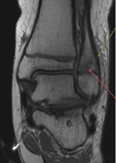
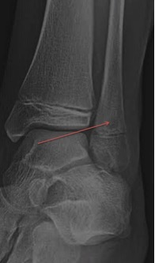
Q9
easy QID 21596
Correct
A 73-year-old male patient presents with worsening globus sensation when swallowing. What is the diagnosis?
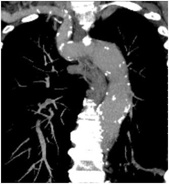
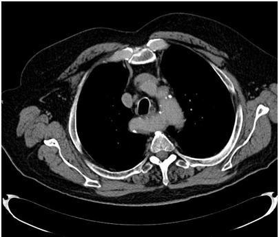
ADouble aortic arch(1%)
BPulmonary sling(2%)
CAberrant right subclavian artery(94%)
DAberrant left subclavian artery(3%)
EInnominate artery compression syndrome(0%)
Your answerC
Correct answerC. Aberrant right subclavian artery
Vital Concept
Left aortic arch with aberrant right subclavian is the most common congenital arch anomaly. This entity is traditionally considered benign without vascular ring formation but can cause airway compression where the aberrant vessel crosses posterior to the trachea in more severe cases.
Explanation
Aberrant right subclavian artery
Aberrant right subclavian artery (blue arrows) is a congenital variant of thoracic vascular anatomy in which the right subclavian artery originates from a left-sided aortic arch and extends posterior to the esophagus (white arrow) to supply the right upper extremity. There is a mildly ectatic segment of the origin of the aberrant vessel (yellow arrow), suspicious for diverticulum of Kommerell. This anomaly can be seen in the setting of both right and left anomalous subclavian arteries. On lateral fluoroscopy or contrast esophogram, there is an associated prominent posterior esophageal impression. Aberrant subclavian arteries often present with a globus sensation upon swallowing. Typically, a pediatric diagnosis, they may go unnoticed until late in life, when age-related vascular dilatation becomes symptomatic.
Incorrect Answers:
A. Double aortic arch is a failure of involution of the normal aortic vascular ring during development. This is a true complete vascular ring, and there is often associated tracheal stenosis, presenting with obstructive pulmonary findings. Double aortic arch may go undiagnosed and may be mistaken for asthma in children. Plain radiographs may demonstrate bilateral tracheal impressions, and CT demonstrates the “4-vessel” sign, in which the carotid arteries and subclavian arteries parallel each other, arising from each side of the aortic ring. It is usually treated by surgical division of the smaller of the two arches.
B. Pulmonary slings are characterized by an abnormal branching of the left pulmonary artery from the proximal right pulmonary artery, which forms a sling around the distal trachea. The result is a posterior tracheal and anterior esophageal impression on lateral radiography and fluoroscopy. It is the only vascular ring that produces an anterior esophageal impression. Treatment includes surgical relocation of the left pulmonary artery to the main pulmonary artery, anterior to the trachea.
D. Aberrant left subclavian artery is a potential configuration that is seen in the setting of a right-sided aortic arch. The plain radiographic and fluoroscopic findings are that of a right-sided lateral tracheal impression on the frontal radiograph and a posterior esophageal impression on lateral fluoroscopy. The other configuration of a right-sided aortic arch is right aortic arch with mirror-image branching, which is more associated with anomalies elsewhere in the body.
E. Innominate artery compression syndrome is a controversial syndrome in which the innominate artery extends too superiorly before turning to form the subclavian artery. In doing so, it creates an impression upon the anterior aspect of the trachea and may present with stridor.
Vital Concept: Left aortic arch with aberrant right subclavian is the most common congenital arch anomaly. This entity is traditionally considered benign without vascular ring formation but can cause airway compression where the aberrant vessel crosses posterior to the trachea in more severe cases.
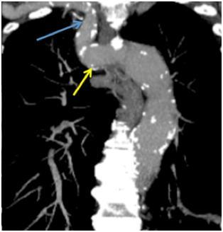
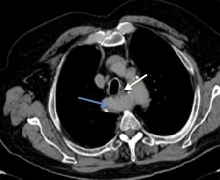
Q10
hard QID 38064
Incorrect
Which of the following terms accurately describes the process whereby one gains admission to medical staff or a panel of health care providers?
ALicensure(3%)
BCredentialing(73%)
CPrivileges(22%)
DCertification(2%)
EContinuing medical education(0%)
Your answerC
Correct answerB. Credentialing
Explanation
Credentialing
There are two distinct but generally linked regulatory processes involved in obtaining the ability to practice medicine. This applies both to practice within an institution such as a hospital, and the ability to provide care to a particular subset of patients, such as those patients in an HMO or PPO, or contracted through a third-party provider.
These processes are credentialing and privileging. While the details are institution-specific, in a hospital environment many of the requirements are mandated by The Joint Commission (TJC). Credentialing is the process whereby one gains admission to medical staff, in the case of a hospital, or to a panel of health care providers, in the case of an insurance company or other institution. This is essentially a verification process or background check conducted through a formal application process.
Incorrect Answers:
A. Licensure refers to being deemed authorized to practice medicine by a government-approved professional organization or agency. In the US, medical licensures are obtained on a state-by-state basis, with each state having its own application process.
C. Privileges are processes by which one's experience and skills are evaluated to determine what clinical activities the physician will be permitted to perform.
D. Certification is the process by which a physician or other professional in the United States demonstrates a mastery of basic knowledge and skills through written, practical, or simulator-based testing. For the radiologist, this is accomplished through the American Board of Radiology.
E. Continuing medical education is maintained by the American Board of Radiology. Physicians must be committed to lifelong learning and be responsible for maintaining the medical knowledge and the clinical and team skills necessary for the provision of quality care.
Q11
QID 4965
Correct
A 51-year-old male with chronic liver disease is referred for inferior vena cava (IVC) filter placement. His current labs show an International Normalized Ratio (INR) of 1.7 and platelets of 75,000/uL. He is not currently taking any anticoagulants. Which of the following is the best recommendation regarding peri-procedural management?
AProceed with IVC filter placement.(69%)
BDelay the procedure for 5 days and recheck INR.(2%)
CTransfuse fresh frozen plasma (FFP) prior to beginning procedure.(18%)
DTransfuse platelets prior to beginning procedure.(2%)
EAdminister vitamin K and recheck INR in 2 to 3 days.(9%)
Your answerA
Correct answerA. Proceed with IVC filter placement.
Vital Concept
The Society of Interventional Radiology considers INR nonapplicable, and platelet count of more than 20,000 /uL acceptable for patients with chronic liver disease undergoing a procedure with low bleeding risk.
Explanation
Proceed with IVC filter placement.
For patients with chronic liver disease undergoing a low bleeding-risk procedure, INR is not applicable and a
platelet count > 20,000/uL is considered acceptable. The Society of Interventional Radiology maintains a consensus paper on the management of anticoagulation on their website (Table 4; see reference).
Incorrect Answers:
B. There is no need to delay the procedure and the patient's INR is likely due to chronic liver disease, which would not be expected to change significantly in 5 days.
C. D. Transfusion of blood products should always be taken seriously and avoided whenever possible.
E. Vitamin K is unlikely to affect this patient's INR as he is not taking a vitamin K antagonist.
Vital Concept: The Society of Interventional Radiology considers INR nonapplicable, and platelet count of more than 20,000 /uL acceptable for patients with chronic liver disease undergoing a procedure with low bleeding risk.
Q12
moderate QID 39286
Correct
The provider’s hospital goes through a checklist before every major procedure. Which of the following tenets of human factor engineering is best exemplified in this case?
AForcing function(12%)
BResiliency efforts(3%)
CStandardization(84%)
DUsability testing(0%)
EWorkarounds(0%)
Your answerC
Correct answerC. Standardization
Explanation
Standardization
Human factor engineering is a discipline in which challenges involving health care providers and safely using available medical equipment and technology are explored. Human factor engineers examine technological processes on a step-by-step basis and determine if and where difficulties in human interaction with those technologies can be improved. There are five tenets of human factor engineering. Standardization is based on the human factor engineering suggestion that all equipment and processes can increase their reliability, improve information flow, and minimize cross-training needs when they are as similar as possible.
Incorrect Answers:
A. Forcing function is a design aspect that prevents an unintended or undesirable action from being performed, or delays the action’s performance until a separate criterion is met. Forcing function does not necessarily involve device design and can be used in the development of procedures or other tasks.
B. Resiliency efforts involve the tools of risk management to detect and mitigate unexpected events before they worsen. Resiliency efforts focus on how organizations anticipate and adapt to unexpected aberrations in the system and reflect how organizations can recover from adversity even with the slimmest margin of error.
D. Usability testing is a tenet and involves testing new systems and equipment under real-world conditions as much as possible, in order to identify unintended consequences of new technology. Usability testing often employs clinical simulations to identify problems with a process’ implementation.
E. Workarounds occur when frontline workers bypass policies or safety procedures in order to efficiently accomplish a task when the given system is flawed or poorly designed. Even though workers develop workarounds to improve their efficiency, the accompanying bypass of safety procedures can lead to dangerous mistakes.
Q13
moderate QID 47279
Correct
Microcalcifications are seen most often in which of the following subtypes of thyroid malignancy?
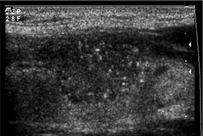
APapillary(86%)
BFollicular(5%)
CMedullary(7%)
DAnaplastic(2%)
ELymphoma(0%)
Your answerA
Correct answerA. Papillary
Vital Concept
Papillary thyroid carcinoma is most associated with microcalcifications.
Explanation
Papillary
Thyroid calcifications occur in both benign and malignant diseases. Thyroid calcifications can be classified as microcalcification, coarse calcification, or peripheral calcification. Thyroid microcalcifications are psammoma bodies, which are 10 to 100 micrometer round laminar crystalline calcific deposits. They are one of the most specific features of thyroid malignancy, with a specificity of 85.8% to 95% and a positive predictive value of 41.8% to 94.2%. Microcalcifications are found in 29% to 59% of all primary thyroid carcinomas, most commonly in papillary thyroid carcinoma. This may reflect the fact that papillary thyroid carcinoma is by far the most common subtype.
Incorrect Answers:
B. C. and D. The occurrence of microcalcifications has been described less frequently in follicular, medullary, and anaplastic thyroid carcinomas.
E. Primary lymphoma of the thyroid is rare, and calcifications are not a typical feature.
Vital Concept: Papillary thyroid carcinoma is most associated with microcalcifications.
Q14
easy QID 2815
Correct
A 65-year-old male with chronic alcohol use disorder presents with foot pain and this x-ray. Which of the following is the diagnosis?
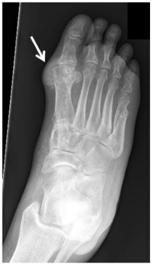
ACharcot-Marie-Tooth(2%)
BOsteomyelitis(2%)
CGout(96%)
DBuerger’s disease(0%)
Your answerC
Correct answerC. Gout
Vital Concept
Classic radiographic findings of gout include punched-out lytic bone lesion, marginal erosions with overhanging edges, and soft tissue tophi.
Explanation
Gout
The foot radiograph depicts soft tissue radiodensity adjacent to the first metatarsophalangeal joint (arrow), most compatible with tophus in the setting of gout. Radiographic findings tend to present late in the disease course of gout; marginal erosions with overhanging edges and punched out lytic lesions can also be seen radiographically.
Incorrect Answers:
A. Charcot-Marie-Tooth (CMT) disease, also known as hereditary motor and sensory neuropathy (HMSN), is the most commonly inherited neuropathy of lower motor (to a lesser degree sensory) neurons. The nerve roots are typically hypertrophic with the onion bulb sign. This represents hypertrophic demyelination. Denervation changes in muscles are apparent. Some enhancement may be seen on MRI, but it is not usually a prominent feature.
B. Osteomyelitis refers to inflammation of bone that is almost always due to infection, typically bacterial. Osteomyelitis can occur at any age. In those without specific risk factors, it is particularly common between the ages of 2 to 12 years and is more common in males: lower limb (most common) vertebrae: lumbar > thoracic > cervical radial styloid sacroiliac joint.
D. Buerger's disease, also known as thromboangiitis obliterans, is a chronic, non-atherosclerotic, inflammatory, thrombotic arteritis found predominantly in young male smokers. Patients may initially present with nonspecific symptoms such as hand and foot claudication, which eventually progresses to ischemic ulceration. A biopsy is often necessary to make the diagnosis because the imaging appearance and symptoms overlap with those of atherosclerosis and other connective tissue diseases.
Vital Concept: Classic radiographic findings of gout include punched-out lytic bone lesion, marginal erosions with overhanging edges, and soft tissue tophi.
Q15
easy QID 60759
Correct
A 74-year-old female presents with left hip pain. Which of the following is the most likely underlying cause based on the radiograph shown below?
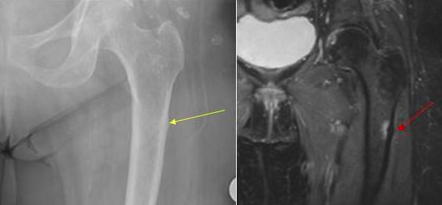
AAcute trauma(3%)
BGaucher’s disease(2%)
CMedication related(93%)
DOsteoarthritis(2%)
Your answerC
Correct answerC. Medication related
Explanation
Medication related
Explanation:
The frontal hip radiograph shows a focal lateral subtrochanteric periosteal reaction involving the femoral shaft (yellow arrow). The coronal T2 weighted image shows correlating focal edema at this site (red arrow). Imaging findings are classical for a bisphosphonate-induced stress reaction. If left untreated, this can progress to an insufficiency fracture which often demonstrates poor healing.
Due to the inhibition of osteoclast activity, bisphosphonates are thought to inhibit bony remodeling, causing underlying structural deficiencies. These findings usually occur after many years of bisphosphonate use. Radiologic screening of the contralateral side should also be performed due to the relatively high incidence of bilateral disease.
Incorrect Answers:
A. There is no radiographic evidence of acute fracture.
B. Femoral osseous manifestations of Gaucher’s disease would show distal shaft metaphyseal flaring resembling an Erlenmeyer flask.
D. Although mild degenerative changes are seen at the hip, this is not the most salient finding.
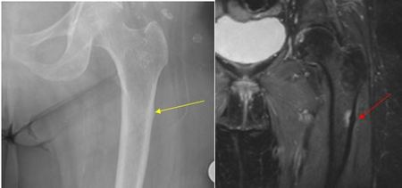
Q16
QID 24065
Correct
Which of the following is the most appropriate treatment for the condition seen in this study obtained from a 36-year-old patient with pelvic pain?
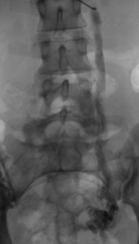
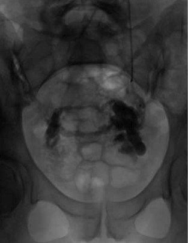
AOpen surgical ovarian vein ligation(0%)
BLaparoscopic ovarian vein ligation(1%)
CHysterectomy and bilateral salpingoophorectomy(0%)
Pelvic congestion syndrome is a condition that results from retrograde flow through incompetent valves in ovarian veins. It is a commonly missed and potentially treatable cause of chronic abdominopelvic pain characterized on angiogram by retrograde reflux, veins dilated to > 1 cm in diameter, and cross-pelvic collateral filling. Treatment is transcatheter ovarian vein embolization.
Explanation
Transcatheter ovarian vein embolization
Ovarian vein embolization is indicated for chronic pelvic pain when venography confirms pelvic vein incompetence with ovarian vein dilatation (shown here) and reflux after failed medical management or as primary treatment. The procedure works by occluding incompetent ovarian veins that cause retrograde flow and venous engorgement, which generates pain through activation of stretch-sensitive pain receptors in venous walls, release of nociceptive neurotransmitters like substance P, and mechanical compression of adjacent pelvic structures. Embolization achieves high technical success with most patients reporting significant symptom relief and low recurrence rates, making it superior to surgical alternatives for appropriately selected patients with venographically confirmed pelvic congestion syndrome.
Incorrect Answers:
A.B. Ovarian vein may be occluded by angiographic embolization. It is noninvasive and safer than open surgical /laporoscopic ovarian vein ligation.
C. No need for TAH+BSO since it may be treated by ovarian vein embolization.
D. Long-term analgesic therapy is inappropriate given that a viable treatment option is available.
Vital Concept: Pelvic congestion syndrome is a condition that results from retrograde flow through incompetent valves in ovarian veins. It is a commonly missed and potentially treatable cause of chronic abdominopelvic pain characterized on angiogram by retrograde reflux, veins dilated to > 1 cm in diameter, and cross-pelvic collateral filling. Treatment is transcatheter ovarian vein embolization.
Q17
hard QID 41454
Correct
A provider is performing a fluoroscopically-guided right hip joint injection on a 66-year-old patient who expresses concern about the radiation dose. The provider assures the patient that their radiation exposure is very low and is much lower than the dose of background radiation they receive. When the patient asks what is the annual average effective radiation dose to a person living in the United States from all sources of radiation, which of the following is an appropriate response from the provider?
A5 to 6 mSv(73%)
B3.1 mSv(17%)
C10 mSv(3%)
D2 to 3 mSv(5%)
E1 mSv(2%)
Your answerA
Correct answerA. 5 to 6 mSv
Vital Concept
The average annual U.S. radiation dose is between 5 and 6 mSv, according to the 2025 ABR RISC Study Guide. Of the 5-6 mSv, 3.1 mSv comes from natural background radiation, and the remainder comes from medical, commercial, and industrial activities.
Explanation
5 to 6 mSv
According to the 2025 ABR RISC Study Guide, the annual average effective radiation dose in the US from all sources of radiation (including background radiation) is between 5 and 6 mSv.
Vital Concept: The average annual U.S. radiation dose is between 5 and 6 mSv, according to the 2025 ABR RISC Study Guide. Of the 5-6 mSv, 3.1 mSv comes from natural background radiation, and the remainder comes from medical, commercial, and industrial activities.
Q18
hard QID 50884
Correct
Which of the following radionuclides has the decay scheme shown below?
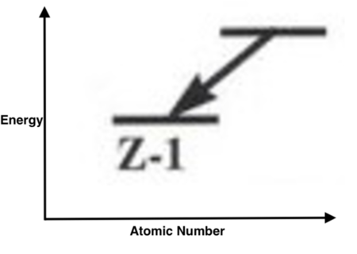
ATl-201(49%)
B99mTc-MDP(14%)
CXe-133(13%)
DI-131(25%)
Your answerA
Correct answerA. Tl-201
Vital Concept
Tl-201 undergoes electron capture decay (Z-1) to Hg-201, producing mercury characteristic X-rays at 68-82 keV used for imaging.
Explanation
Tl-201
The diagram presents a decay scheme demonstrating electron capture. While energy is depicted on the vertical Y-axis, the atomic number is shown on the horizontal X-axis. Electron capture occurs much less frequently than the emission of a positron. Whereas beta decay can occur spontaneously when energetically allowed, for an electron capture the weak forces requires that the electron come into close contact with a proton of the nucleus.
The straight downward left arrow demonstrates Z (atomic number) decreasing by 1, and N (neutron number) increasing by 1. Because the final state depicts a line at a lower Y-axis, this is a more stable, lower energy. The following nuclides decay by electron capture: Co-57, Ga-67, In-111, Tl-201, and I-123.
Incorrect Answers:
B. Technetium-99m decays by a process called isomeric transition, a process in which 99mTc decays to 99Tc via the release of gamma rays and low energy electrons. Since there is no high energy beta emission, the radiation dose to the patient is low.
C. Xe 133 decays by beta and gamma emissions with a half-life of 5.245 days.
D. Iodine-131 has a half-life of 8.06 days and decays by beta-particle emission to a stable 131Xe.
Vital Concept: Tl-201 undergoes electron capture decay (Z-1) to Hg-201, producing mercury characteristic X-rays at 68-82 keV used for imaging.
Q19
hard QID 37637
Correct
On this 99mTcO4 scan performed for the work-up of Warthin's tumor (arrow), which of the following is consistent with the incidental appearance of the thyroid gland in this patient?
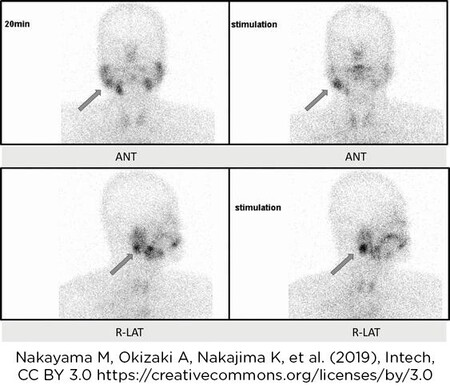
APrimary hypothyroidism(8%)
BSubacute thyroiditis, initial presentation(24%)
CExogenous thyroid hormone administration(7%)
DStruma ovarii(6%)
EAll of the above diagnoses can have this appearance(55%)
Your answerE
Correct answerE. All of the above diagnoses can have this appearance
Explanation
All of the above diagnoses can have this appearance
The 99mTcO4 scan demonstrates markedly diminished uptake in the thyroid bed with focal uptake in the right parotid gland compatible with Warthin's tumor on the background of physiologic uptake in the salivary glands. Thyroid uptake is diffusely diminished with no focal findings; answers A-D are all potential acauses of diminished thyroid uptake on 99mTco4 scan.
Incorrect Answers:
A. Primary hypothyroidism due to decreased thyroid gland function will have the appearance seen here, with decreased radiotracer uptake.
B. In subacute thyroiditis, a post-viral inflammatory response leads to giant cell infiltration into the thyroid follicles, ultimately resulting in follicular swelling and disruption with the release of stored thyroid hormone into the circulation (causing hyperthyroidism initially, and later potentially hypothyroidism). The radioactive iodine uptake is very low since the affected thyroid is unable to transport or organify iodine.
C. Exogenous thyroid hormone administration, either iatrogenic or taken for weight loss, will suppress native TSH and lead to reduced uptake of iodine in the thyroid gland.
D. Struma ovarii is a very rare condition in which a malignant ovarian tumor produces thyroid hormone. The result is similar to exogenous thyroid hormone administration, with suppression of native TSH, decreased radioactive thyroid hormone uptake, and a clinically hyperthyroid picture.
Q20
hard QID 2739
Correct
Which of the following best describes the standard short axis view in cardiac magnetic resonance imaging (MRI)?
AVertical plane parallel to the long axis of the heart(4%)
BVertical plane that is obliquely oriented with respect to the long axis of the heart(8%)
CHorizontal plane parallel to the long axis of the heart(8%)
DPlane perpendicular to the long axis of the heart through the mid-left ventricle(73%)
Your answerD
Correct answerD. Plane perpendicular to the long axis of the heart through the mid-left ventricle
Vital Concept
Standard imaging planes in cardiac MRI include the short axis, horizontal long axis (four-chamber view), and vertical long axis (two-chamber view). These planes are obtained by drawing a line from the mitral valve to the left ventricular apex; this defines the long axis of the heart. The short axis plane passes perpendicular to the long axis of the heart and through the level of the mid-left ventricle.
Explanation
Plane perpendicular to the long axis of the heart through the mid-left ventricle
The standard cardiac MRI imaging planes are derived from the long axis of the heart. The long axis of the heart is defined by a line between the cardiac apex and the middle of the mitral valve. The short-axis plane is perpendicular to this line and passes through the mid-left ventricle.
Incorrect Answers:
A. This is a description of the vertical long axis plane (two-chamber view).
B. This is a description of the oblique sagittal plane. This is a plane tailored to evaluate the aorta.
C. This is a description of the horizontal long axis plane (four-chamber view).
Vital Concept: Standard imaging planes in cardiac MRI include the short axis, horizontal long axis (four-chamber view), and vertical long axis (two-chamber view). These planes are obtained by drawing a line from the mitral valve to the left ventricular apex; this defines the long axis of the heart. The short axis plane passes perpendicular to the long axis of the heart and through the level of the mid-left ventricle.
Q21
hard QID 4990
Incorrect
An 8-year-old male presents with throat pain, and the following CT was obtained. Which of the following is the most appropriate initial management?
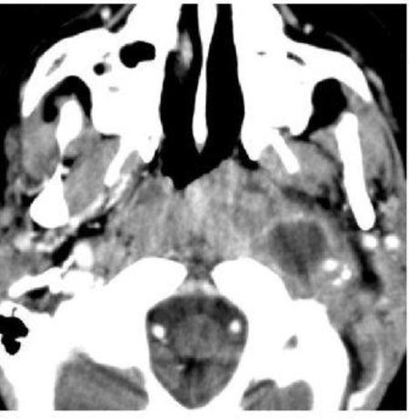
AAntibiotic therapy(68%)
BSurgical drainage through the oral cavity(14%)
CSurgical drainage through the nasopharynx(14%)
DPercutaneous image-guided drainage(3%)
ENo treatment is necessary(1%)
Your answerC
Correct answerA. Antibiotic therapy
Explanation
Antibiotic therapy
The CT image shows a well-defined rounded hypodense fluid collection with peripheral enhancement in the left parapharyngeal space just medial to the carotid artery. There is also inflammatory change in the left pharynx. These findings are most consistent with suppurative adenitis and should not be confused for a parapharyngeal abscess. The rounded and well-defined nature, as well as the typical location, are the hallmarks of the disease. The typical treatment for suppurative adenitis is a trial of antibiotics with surgical drainage reserved for those who fail to respond. If no treatment is instituted, the natural history is typically progression to the point of rupture resulting in formation of a parapharyngeal abscess necessitating surgical drainage.
Q22
easy QID 20798
Correct
A 2-year-old male with macrocephaly and facial asymmetries presents with seizures. The MR images shown were obtained. Which of the following diagnoses best accounts for the findings here?
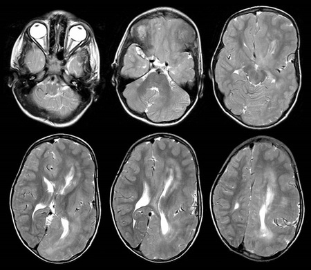
AHemimegalencephaly(94%)
BLissencephaly(3%)
CRasmussen encephalitis(3%)
DGliomatosis cerebri(1%)
EAcute disseminated encephalomyelitis (ADEM)(0%)
Your answerA
Correct answerA. Hemimegalencephaly
Explanation
Hemimegalencephaly
T2-weighted MRI demonstrates an enlarged left cerebral hemisphere with cortical thickening (blue arrows) and underdeveloped sulci throughout. There is rightward deviation of the posterior falx cerebri and left occipital pole, enlargement of the left cerebellar hemisphere (arrowheads), and enlargement of the left lateral ventricle. Normal contralateral cortex is labeled for comparison (white arrows). Hemimegalencephaly is an idiopathic congenital disorder postulated to arise from an insult to the developing brain. It involves abnormalities of neural proliferation, migration, and differentiation, resulting in hamartomatous overgrowth of part or all of a cerebral hemisphere. Classic imaging findings include unilateral gyral thickening and disorganization, shallow sulci, and variable cortical heterotopias, pachygyria and polymicrogyria. Hemimegalencephaly is associated with abnormalities of the ipsilateral optic nerve, brain stem, and cerebellum (arrowheads). Patients typically present with macrocephaly, developmental delay, and seizures that are often unresponsive to medical management.
Incorrect Answers:
B. Type 1 lissencephaly (a.k.a. classic lissencephaly) is an abnormality of arrested neuronal migration. It appears as absent or reduced cerebral sulcation and primitive Sylvian fissures resulting in a diffusely smooth appearance of the cerebral cortex. The asymmetry of the cortical abnormality above makes lissencephaly unlikely.
C. Rasmussen encephalitis is an idiopathic inflammatory process resulting in unilateral hemispheric atrophy. Early MRI findings may include unilateral focal cortical swelling, but a diffusely enlarged cerebral hemisphere, as seen in the images given, would not be consistent with Rasmussen encephalitis.
D. Gliomatosis cerebri may present as enlarged cortex with associated T2-hyperintensity, generally without abnormal contrast enhancement. It would be very unusual for gliomatosis cerebri to affect the entirety of a single cerebral hemisphere, as seen in this case.
E. Acute disseminated encephalomyelitis is a demyelinating disorder that often follows vaccination or infection. Classically, the pattern has been described as multifocal, asymmetric, bilateral involvement of white matter and deep gray nuclei. Involvement of the entirety of a cerebral hemisphere suggests an alternate diagnosis.
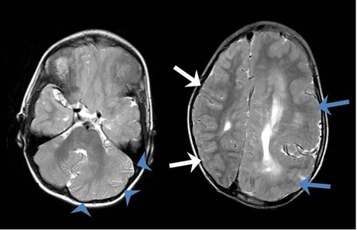
Q23
moderate QID 2823
Correct
A 28-year-old male had a fall from a 30-foot height. Before being intubated due to hypotension, he reported extreme right-sided pelvic pain. Trauma series pelvic radiograph and an axial CT image from a trauma pan-scan are shown. Early aggressive fluid resuscitation and pelvic stabilization resulted in hemodynamic stability. Based on the CT findings and clinical history, which of the following is the next step in management?
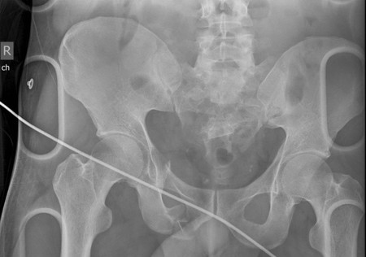
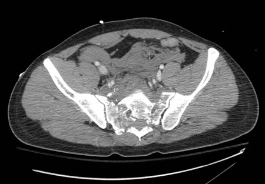
AICU monitoring only(1%)
BOpen surgical hematoma evacuation and packing(5%)
CCatheter angiogram(88%)
DCT-guided drainage catheter placement(1%)
ESystematic radiography of both lower extremities(4%)
Your answerC
Correct answerC. Catheter angiogram
Vital Concept
Pelvic fractures resulting from falls from height can often present with associated active extravasation arising from the pelvic vessels. Aggressive resuscitation, orthopedic stabilization of pelvic fractures and pelvic packing are primary treatment options that would usually precede endovascular treatment in hemodynamically unstable patients. In hemodynamically stable patients, catheter angiogram and possible embolization is performed.
Explanation
Catheter angiogram
An angiogram should be performed to assess the appropriateness of embolization of the pelvic arteries. As seen on the radiograph performed with the patient on a trauma board, the patient has sustained a vertical shear-type pelvic fracture on the right. This is evidenced by the (bilateral) sacral fractures and the craniocaudal translation of the right pubic rami fractures relative to each other. The most common mechanism for this fracture is falling from a height, as was the history in this case. The axial CT image demonstrates extensive extraperitoneal hematoma, both adjacent to the sacrum and extending anteriorly, such as anterior to the iliac vessels and iliopsoas muscles. Pelvic bleeding in patients with pelvic fractures may be arterial, venous, or through the marrow ("bone bleeding"), with the most concerning obviously being arterial bleeding. In this case, the patient is resuscitated with fluid (and blood) and undergoes stabilization of the pelvic fractures (such as with external fixation). With hemodynamic stability achieved, the patient undergoes angiography and potential embolization of arterial bleeding.
Incorrect Answers:
B. Open surgery for extraperitoneal bleeding is only done in patients who remain persistently unstable.
D. CT-guided drainage catheter placement is not indicated in this context.
E. Radiography of the lower extremities is indicated in patients with falls from height, who commonly sustain other fractures such as pilon fractures, talar fractures, and calcaneal compression fractures; however, in patients with possible active extravasation, catheter angiogram and possible embolization is a better next step.
Vital Concept: Pelvic fractures resulting from falls from height can often present with associated active extravasation arising from the pelvic vessels. Aggressive resuscitation, orthopedic stabilization of pelvic fractures and pelvic packing are primary treatment options that would usually precede endovascular treatment in hemodynamically unstable patients. In hemodynamically stable patients, catheter angiogram and possible embolization is performed.
Q24
easy QID 39330
Correct
Which of the following activities is discouraged by the American College of Radiology rules of ethics?
AConsultative opinion(1%)
BExpert medical testimony(0%)
CPublicity(2%)
DResearch(0%)
ESelf-referral(97%)
Your answerE
Correct answerE. Self-referral
Explanation
Self-referral
Medical professionals and their organizations have many opportunities to compromise their professional responsibilities by pursuing private gain or personal advantage. Self-referral, the act of referring patients to health care facilities in which the referring physician has a financial interest, is discouraged by the American College of Radiology (ACR) rules of ethics.
Incorrect Answers:
A. Radiologists providing consultative opinions is not discouraged by the ACR rules of ethics. According to the ACR, radiologists should provide consultative opinions on radiographs and other images regardless of their origin. These radiologists should also participate in quality assurance, technology assessment, utilization review, and other matters of policy that affect the quality and safety of patient care.
B. Providing expert medical testimony is not discouraged by the ACR rules of ethics. According to the ACR, radiologists who are called to give expert medical testimony in legal proceedings should provide testimony that is non-partisan, scientifically correct, and clinically accurate. However, radiologists should not accept compensation that is dependent on the outcome of the legal proceedings.
C. Publicity is not discouraged by the ACR rules of ethics. According to the ACR, radiologists can publicize themselves through any medium or forum of public communication. However, they should not do so in an untruthful, misleading, or deceptive manner.
D. Research is not discouraged by the ACR rules of ethics. According to the ACR, radiologists are encouraged to perform research. However, the research must be performed with integrity and should not be plagiarized.
Q25
moderate QID 56859
Incorrect
The Alliance for Radiation Safety in Pediatric Imaging developed a grassroots campaign entitled “Step Lightly.” What is the primary mission advocated by this campaign?
ARevising CT protocols to ensure low-dose techniques in pediatric population(3%)
BIncreasing utilization of nonionizing imaging techniques such as ultrasound and MRI(3%)
CReducing fluoroscopic times during adult interventional radiology procedures(4%)
DReducing radiation doses during fluoroscopically-guided pediatric interventional radiology procedures(90%)
Reducing radiation doses during fluoroscopically-guided pediatric interventional radiology procedures
The campaign “Step Lightly” was published in 2009 by the Journal of Vascular and Interventional Radiology and furthered the principles of “Image Gently.” A pre-procedural checklist was created for review by the pediatric interventional radiology team. Additionally, an outline was written documenting peri- and intraprocedural guidelines and steps to achieve lower radiation doses. A patient brochure was also created for parents to answer common questions regarding radiation. The campaign utilized strong social marketing to ensure wide awareness by both the medical community and general public.
Incorrect Answers:
A. This is the mission of the “Image Gently” campaign.
B. The American College of Radiology (ACR) has developed appropriateness criteria guiding physician imaging ordering in different patient populations.
C. “Step Lightly” focuses on the pediatric patient population.
Q26
easy QID 18109
Correct
Which of the following is the most likely diagnosis on this second trimester prenatal ultrasound?
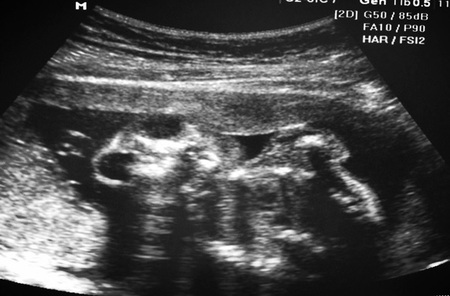
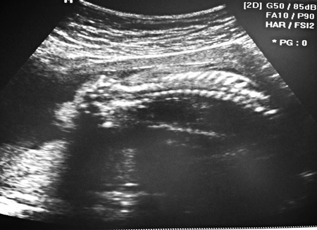
AHydranencephaly(4%)
BAnencephaly(93%)
CExencephaly(2%)
DAmniotic band syndrome(1%)
Your answerB
Correct answerB. Anencephaly
Explanation
Anencephaly
In anencephaly, there is complete absence of the neural tissue above the skull base and absence of the cranial vault. It is the most severe form of the neural tube defects and occurs secondary to failure of closure of the antral end of the neural tube. On ultrasound there is complete absence of the tissue above the orbits and absence of the calvarium. The “frog-eye” appearance refers to the absence of the tissue above the orbits with bulging of the orbits on the coronal view of the face.
Incorrect Answers:
A. In hydranencephaly an in-utero insult leads to complete destruction of the cerebral hemispheres, which become replaced by a big CSF-filled sac surrounding the basal ganglia, brain stem, and cerebellum. It occurs most commonly secondary to vascular insult to the supraclinoid internal carotid arteries leading to complete infarction of the cerebral hemispheres. The falx is usually present.
C. In exencephaly, there is a small amount of neural tissue present above the orbits. This may be seen at an earlier stage of anencephaly.
D. The amniotic band syndrome (ABS) comprises a wide spectrum of abnormalities and results from entrapment of various fetal parts from a disrupted amnion. The most common abnormality is limb defects. ABS can rarely lead to anencephaly.
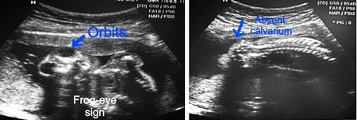
Q27
moderate QID 19219
Correct
A gynecologist colleague asks the provider to take a look at the breast ultrasound of a 36-year-old female patient with a new breast mass. Which of the following should the provider recommend for this patient?
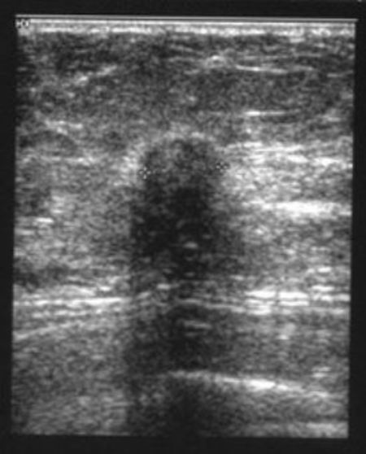
AFollow-up ultrasound in six months(4%)
BAspiration of cyst(1%)
CMammogram to look for additional findings and biopsy(91%)
DNo treatment is indicated at this time(3%)
Your answerC
Correct answerC. Mammogram to look for additional findings and biopsy
Vital Concept
On ultrasound, a hypoechoic mass with a mostly irregular shape with orientation not parallel to skin, an indistinct border sometimes seen with halo, posterior shadowing, and small calcifications is highly suspicious for breast malignancy and should be followed by a biopsy.
Explanation
Mammogram to look for additional findings and biopsy
Incorrect Answers:
A. This is a highly suspicious lesion for malignancy. Follow-up should not be recommended.
B. This is not a cystic lesion. Cystic lesions are typically anechoic.
D. This lesion should be evaluated histopathologically with biopsy since it is very suspicious for malignancy.
Vital Concept: On ultrasound, a hypoechoic mass with a mostly irregular shape with orientation not parallel to skin, an indistinct border sometimes seen with halo, posterior shadowing, and small calcifications is highly suspicious for breast malignancy and should be followed by a biopsy.
Q28
moderate QID 21157
Incorrect
A 57-year-old male patient with history of follicular lymphoma presents for follow-up imaging. Which of the following is the most likely etiology for the appearance of the liver?
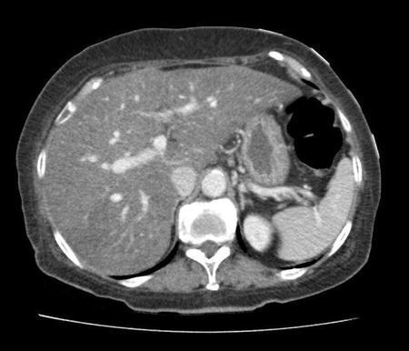
APrior chemotherapy(85%)
BAlcohol misuse(12%)
CChronic viral hepatitis(1%)
DDiffuse metastasis(1%)
EChronic biliary obstruction(0%)
Your answerB
Correct answerA. Prior chemotherapy
Explanation
Prior chemotherapy
The CT image demonstrates diffuse hepatic steatosis characterized by homogeneously decreased hepatic parenchymal attenuation (purple arrows). The liver is closer in attenuation to the subcutaneous fat (blue arrow) than to the spleen (yellow arrow). Common etiologies for diffuse hepatic steatosis include obesity, alcohol misuse, steroid administration, and various chemotherapeutic agents, among others. This is distinct from focal hepatic steatosis, which is often idiopathic and located in characteristic locations, for example, adjacent to the falciform ligament and the gallbladder fossa.
Incorrect Answers:
B. While chronic alcohol misuse can result in hepatic steatosis, the given history suggests a different etiology.
C. Chronic viral hepatitis may result in hepatic cirrhosis, which is characterized by a nodular, shrunken hepatic contour with widened fissures and caudate lobe hypertrophy. MRI may demonstrate T2 hypointense regenerative nodules.
D. Diffuse metastatic disease could produce diffusely low-density hepatic parenchyma. However, diffuse metastasis frequently produces a more patchy appearance of hepatic hypoattenuation. Additionally, diffuse involvement of the liver with lymphoma typically results in significant hepatomegaly.
E. Chronic biliary obstruction would be expected to result in more prominent dilatation of the intrahepatic biliary ducts than that seen in the given imaging. Ongoing chronic biliary obstruction may additionally produce parenchymal volume loss and scarring.
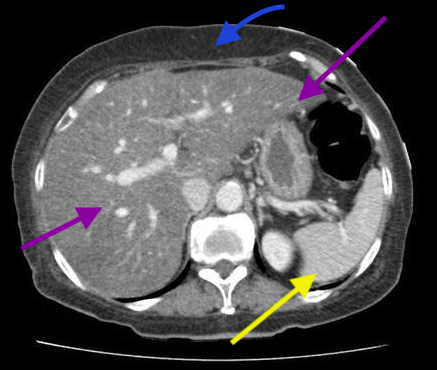
Q29
moderate QID 38132
Correct
A 56-year-old male patient with a history of cirrhosis undergoes an abdominal ultrasound because of chronic right upper quadrant pain. Which of the following is the most likely diagnosis for the liver lesion below?
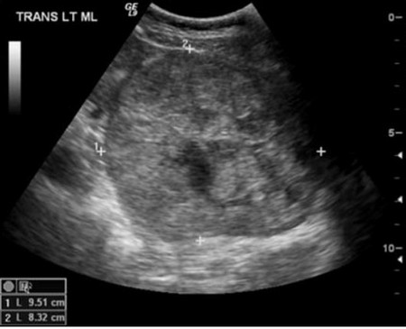
AHepatitis A virus(7%)
BEarly stages of inflammatory bowel disease(3%)
CHepatocellular carcinoma(83%)
DHepatitis E virus(3%)
ECryoglobulinemia Type II(3%)
Your answerC
Correct answerC. Hepatocellular carcinoma
Explanation
Hepatocellular carcinoma
The image demonstrates a large heterogeneous mass (red arrow) in the left lobe of the liver with a hypoechoic halo (blue arrows). The presence of hypoechoic halo, though not diagnostic of malignancy, is highly suggestive of a malignant process with a sensitivity of 88% and a specificity of 86%. It has been speculated that the halo represents compressed parenchyma at the interface of the mass and normal tissue. The imaging features, in addition to the clinical history, are thus concerning for hepatocellular carcinoma (HCC).
HCC has a variable sonographic appearance depending on the individual, the lesion size, and echogenicity of the background liver. Typically, a small focal HCC appears hypoechoic compared with normal liver. Larger lesions are heterogeneous (as seen in this case) due to fibrosis, fatty change, necrosis, and calcification. Again, a peripheral halo of hypoechogenicity may be seen with or without focal fatty sparing.
Diffuse HCC may be difficult to identify or distinguish from background cirrhosis. The American Association for the Study of Liver Disease (AASLD) promotes screening ultrasound, typically bi-annually, in patients with an established diagnosis of hepatic fibrosis. In addition to imaging, a positive serum AFP level and/or biopsy may be necessary for diagnosis.
Incorrect Answers:
A. E. Hepatocellular carcinoma (HCC) is the most common primary malignancy of the liver. It is strongly associated with cirrhosis, from both alcohol and viral etiologies (typically including chronic hepatitis B and C). Hepatitis A tends to be acute and self-limited without associated HCC risk; Hepatitis E also tends to be acute (but can be chronic in immunocompromised patients) and is less commonly associated with HCC compared to Hepatitis B/C.
B. D. Additional factors that lead to cirrhosis and thus place one at risk for HCC include hemochromatosis, biliary cirrhosis, congenital biliary atresia, alpha-1 antitrypsin disease, Wilson disease, and food toxins. Mixed cryoglobulinemia is associated with HCV virus which is now curable with anti-viral therapy.
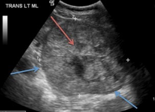
Q30
hard QID 2711
Correct
On fetal echocardiography, which of the following is most thoroughly evaluated with the four-chamber view?
ATetralogy of Fallot(8%)
BTransposition of the great vessels(4%)
CAtrioventricular septal defect(64%)
DTruncus arteriosus(24%)
Your answerC
Correct answerC. Atrioventricular septal defect
Vital Concept
In addition to four-chamber views, outflow tract views allow for more thorough diagnosis of Tetralogy of Fallot, transposition of the great arteries and truncus arteriosus at fetal ultrasound.
Explanation
Atrioventricular septal defect
Atrioventricular septal defect results in communication of all four chambers of the heart. When this entity is present, it is generally clearly evident on four-chamber view during fetal ultrasound.
atrioventricular canal defect on echocardiography
Incorrect Answers:
Though tetralogy of Fallot, transposition of the great arteries and truncus arteriosus would certainly present with abnormalities on four-chamber view, outflow tract views are more optimal to evaluate for and differentiate these diagnoses.
A. Tetralogy of Fallot is a congenital cardiac malformation that consists of an interventricular communication, also known as a ventricular septal defect, obstruction of the right ventricular outflow tract, override of the ventricular septum by the aortic root, and right ventricular hypertrophy. Outflow tract views can specifically demonstrate these anatomical abnormalities.
B. In this anomaly, the aorta arises from the morphological right ventricle (RV), and the pulmonary artery arises from the morphological left ventricle (LV). Sweeping between outflow tract views can show the absence of expected crossing of these vessels.
D. Outflow tract views best show the common vascular trunk characteristic of truncus arteriosus that gives rise to both the aorta and pulmonary arteries. Four-chamber view alone would be insufficient for this diagnosis.
Vital Concept: In addition to four-chamber views, outflow tract views allow for more thorough diagnosis of Tetralogy of Fallot, transposition of the great arteries and truncus arteriosus at fetal ultrasound.
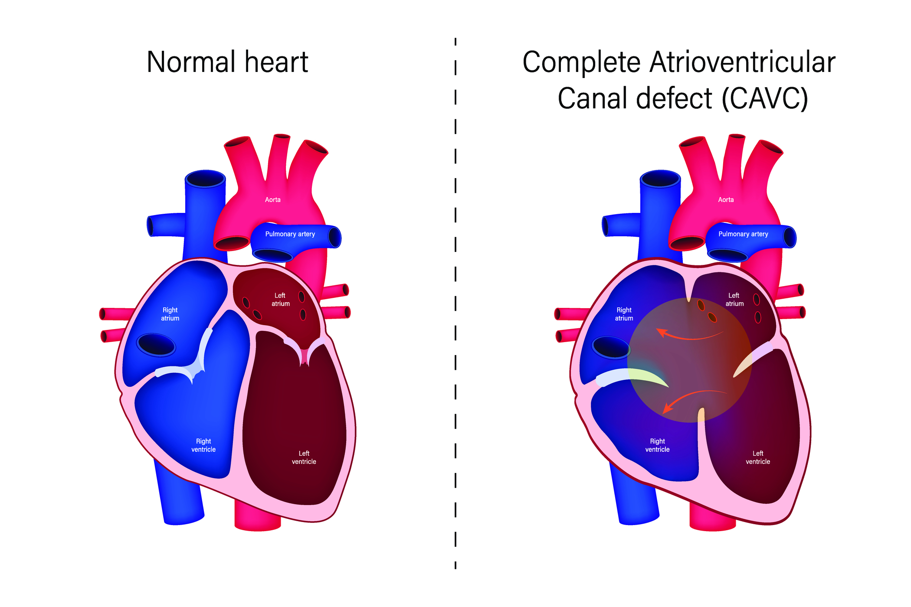
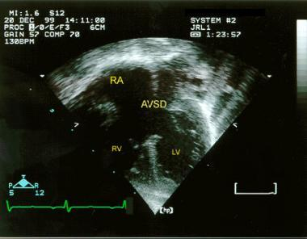
Q31
hard QID 47087
Incorrect
Which of the following is the most likely causative organism in this patient with fever, leukocytosis, and right upper quadrant pain?
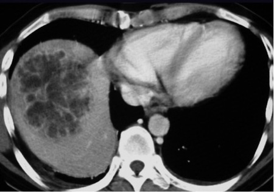
AEscherichia coli(55%)
BStreptococcus pneumoniae(1%)
CStaphylococcus aureus(8%)
DEntamoeba histolytica(17%)
EEchinococcus granulosus(19%)
Your answerD
Correct answerA. Escherichia coli
Vital Concept
Coalescing pyogenic hepatic abscesses appear as multiple small hypoattenuating lesions with rim enhancement that merge into larger lesions, most commonly caused by Escherichia coli and Klebsiella pneumoniae from biliary sources.
Explanation
Escherichia coli
The contrast-enhanced CT shows a cluster of small hypodense and peripherally enhancing lesions (orange arrows) in the right hepatic lobe that are beginning to coalesce into a single large cavity (red arrow). Given the history provided, this is highly suggestive of pyogenic hepatic abscess. This entity is often polymicrobial, most commonly due to gram-negative enteric flora such as Escherichia coli and Klebsiella pneumoniae.
Incorrect Answers:
B. and C. Gram-positive microbes are not frequently implicated.
D. Entamoeba histolytica is rare in the United States but is the second leading cause of death due to parasites in the developing world. It appears more often in imaging as a solitary, peripherally enhancing, round or ovoid mass, typically with higher attenuation than water density.
E. Echinococcus granulosus is a parasite that causes cystic hydatid disease, a process most often affecting the liver. Characteristic imaging features are a unilocular, well-defined, thick-walled hepatic cyst with mural calcifications. Numerous peripheral daughter cysts may be seen.
Vital Concept: Coalescing pyogenic hepatic abscesses appear as multiple small hypoattenuating lesions with rim enhancement that merge into larger lesions, most commonly caused by Escherichia coli and Klebsiella pneumoniae from biliary sources.
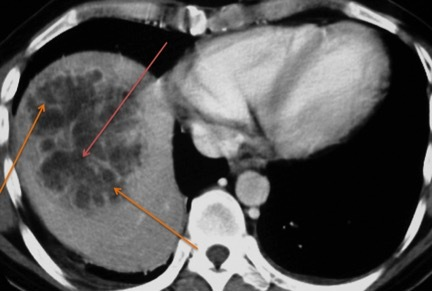
Q32
QID 38117
Incorrect
Which of the following is the most likely diagnosis in this bone scan performed in a 37-year-old male with a hard chest wall mass?
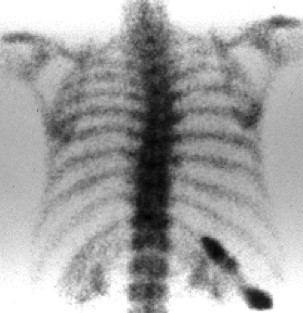
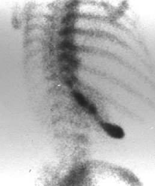
AHealing fracture(7%)
BMetastatic disease(7%)
COsteosarcoma(15%)
DFibrous dysplasia(71%)
EOsteomyelitis(0%)
Your answerB
Correct answerD. Fibrous dysplasia
Explanation
Fibrous dysplasia
The anterior and posterior oblique planar images from this delayed Tc99-MDP bone scan demonstrate intense tracer activity involving a single enlarged rib (yellow arrows). The pattern of activity is linear and is along a stretch of rib that is several cm long. The enlarged appearance is also key to the diagnosis, as these are all features of fibrous dysplasia. The ribs are the most common sites for this process, accounting for approximately 25% of fibrous dysplasia.
Incorrect Answers:
A. In the ribs, a vertical alignment of focal (not linear) abnormal uptake in several or successive ribs is classic for fracture. The 4th-10th ribs are those most commonly fractured.
B. The usual pattern of metastatic disease consists of increased radiotracer deposition in areas of osteoblastic reparative activity in response to tumor osteolysis. The presence of multiple randomly distributed areas of increased uptake of varying size, shape, and intensity is highly suggestive of bone metastases.
C. A primary bone tumor such as osteosarcoma is a differential consideration, however the demographic and location would be atypical. Osteosarcomas are common in skeletally immature patients. They are also seen later in life in patients who have undergone prior radiation or occasionally in the setting of Paget's disease.
E. While rib osteomyelitis is rare, imaging findings of lytic changes at the costochondral junction combined with a history of fever elevated inflammatory markers, localized soft tissue swelling in the chest should raise suspicion for this disease. The classic appearance of osteomyelitis consists of focally increased bone uptake (not decreased). Abnormalities at radionuclide bone imaging reflect increased bone mineral turnover in general, not infection specifically.
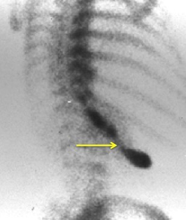
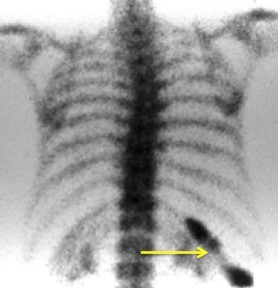
Q33
hard QID 41470
Incorrect
How long must records of instrument and radiation survey calibrations be kept?
A4 years(1%)
B5 years(26%)
C2 years(1%)
D3 years(66%)
E7 years(6%)
Your answerB
Correct answerD. 3 years
Explanation
3 years
According to the 2025 ABR RISC study guide, records of instrument and radiation survey calibrations must be kept for 3 years. Records should include an instrument model and serial number, calibration date, calibration results, and the identity of the person who calibrated the instrument.
Q34
easy QID 39278
Correct
A 38-year-old female patient presents to the emergency department with fever and right lower quadrant pain. The patient’s labs are notable for leukocytosis. Which of the following is the most likely diagnosis?
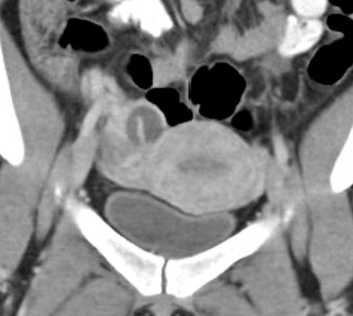
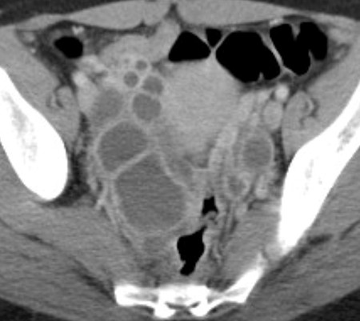
ATubal ectopic pregnancy(0%)
BDiverticular abscess(0%)
CColitis(0%)
DOvarian epithelial tumor(0%)
ETubo-ovarian abscess(100%)
Your answerE
Correct answerE. Tubo-ovarian abscess
Explanation
Tubo-ovarian abscess
The multiplanar CT images show a complex adnexal mass (blue arrows) with thick enhancing walls and septations (red arrows) adjacent to the right ovary (yellow arrow). These findings and history are most suggestive of tubo-ovarian abscess (TOA). Note, the surrounding bowel is normal (green arrows). TOA is one of the late complications of pelvic inflammatory disease. Patients typically present with fever, elevated white blood cell count, lower abdominal-pelvic pain, and/or vaginal discharge. TOA is often polymicrobial with a preponderance of anaerobic organisms. Initial treatment can include antibiotic therapy. With image-guided drainage or surgical evacuation, more aggressive treatment options are typically reserved for those cases which do not improve with medical management.
Incorrect Answers:
A. Tubal ectopic pregnancy can have almost any appearance depending on the stage of presentation. It is almost exclusively diagnosed via ultrasound because patients suspected of having this diagnosis are screened with a quantitative hCG typically prior to imaging.
B, C. Diverticular abscess and colitis may mimic aspects of TOA clinically. On imaging they would appear as either focal or diffuse bowel wall thickening with surrounding fat stranding, and free or encapsulated fluid, which are not seen here.
D. Ovarian epithelial neoplasms, such as serous cystadenoma, may have an overall similar appearance on imaging. The clinical and laboratory history are important for making the correct diagnosis (lack of fever and leukocytosis, elevated tumor markers). Additionally, tumors on the malignant end of the spectrum often have solid and enhancing components and extra-ovarian diseases such as ascites and/or carcinomatosis.
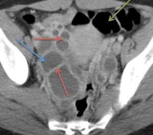
Q35
moderate QID 2833
Correct
A 42-year-old PPD-negative patient from Missouri presents to the ED with bilateral facial nerve weakness. Review of systems was significant for chronic lung disease, but he takes no medication for this. MRI of the brain was performed and pre-contrast and post-contrast T1-weighted images are shown. What is the most likely diagnosis in this patient?
ATuberculosis(7%)
BSarcoidosis(89%)
CIntracranial hypotension(0%)
DCerebritis/abscess(1%)
ERuptured dermoid cyst(2%)
Your answerB
Correct answerB. Sarcoidosis
Explanation
Sarcoidosis
There are two primary patterns of meningeal enhancement: pachymeningeal enhancement of the dura and leptomeningeal enhancement of the pia/subarachnoid. Leptomeningeal enhancement extends into sulci, as in this case where nodular enhancement is seen along the circle of Willis and in the olfactory sulci bilaterally. Leptomeningeal enhancement may also be thin and linear, such as in bacterial or viral meningitis, or nodular and thick, such as in fungal, tubercular, metastatic or sarcoid meningitis. Sarcoidosis is the most common cause of chronic meningitis in the developed world (TB is most common in the developing world). The incidence of neurosarcoidosis is as follows: 5% show clinical manifestations and 25% are found post-mortem (AJR Feb 2004). Cranial nerve abnormalities are the most common presenting symptom, usually of the facial nerve. In this patient with a negative PPD and a history of lung disease, sarcoidosis is the best answer.
Incorrect Answers:
A. Sarcoidosis is the most common cause of chronic meningitis in the developed world, and tuberculosis is the most common in the developing world).
C. Intracranial hypotension appears as pachymeningeal enhancement.
D. Cerebritis and abscess are terms used to describe infection of the brain substance, whereas in this case, the process is centered in the subarachnoid space.
E. Foci of fat signal are not seen on T1 (pre-contrast) images, making the diagnosis of ruptured dermoid cyst unlikely.
Q36
easy QID 12305
Correct
In the diagram shown, if point B is at double the distance from the source compared to point A, what is the exposure dose at point B if the dose at point A is 10 mGy?
AApproximately 1.5 mGy(3%)
BApproximately 2.5 mGy(90%)
CApproximately 4 mGy(2%)
DApproximately 5 mGy(4%)
Your answerB
Correct answerB. Approximately 2.5 mGy
Vital Concept
The Inverse Square Law states that the intensity of the x-ray beam is inversely proportional to the square of the distance of the object from the source. There is a rapid decrease in beam intensity as the beam spreads out over an increasingly larger area.
Explanation
Approximately 2.5 mGy
The inverse square law states that radiation intensity decreases with the square of distance from the source. This occurs because radiation spreads over larger areas as distance increases.
Point B is twice as far as point A from the source. Distance doubles, so dose decreases by factor of 4 (or 2 squared). Dose at point B = 10 mGy ÷ 4 = 2.5 mGy.
In radiology, this roughly governs dose distribution from x-ray sources. Doubling distance reduces dose to one-fourth the original value.
Incorrect Answers:
A.C.D. Since the distance doubles, dose decreases 4 times. 10mGy/4=2.5.
Vital Concept: The Inverse Square Law states that the intensity of the x-ray beam is inversely proportional to the square of the distance of the object from the source. There is a rapid decrease in beam intensity as the beam spreads out over an increasingly larger area.
Q37
hard QID 82402
Correct
A 32-year-old female presents to the emergency department (ED) with severe right-sided abdominal pain that originates at the right flank and radiates to the groin. The patient has a history of recurrent urinary tract infections (rUTI). Vital signs are significant for a temperature of 102°F (40°C), a heart rate of 105 beats/minute, and a respiratory rate of 20/minute. A CT scan of the abdomen is shown below. What is expected on urinalysis?
AAcidic urine(9%)
BUric acid crystals(6%)
CAlkaline urine(63%)
DCalcium oxalate crystals(22%)
Your answerC
Correct answerC. Alkaline urine
Vital Concept
Staghorn renal calculi are most commonly composed of magnesium ammonium phosphate (struvite). They occur with increased ammonia production and alkaline urine. This is often due to infection with a urease-producing organism such as
Explanation
Alkaline urine
The CT scan reveals a dense calcific branching “staghorn” mass filling the collecting system of the right kidney. This patient is presenting with pyelonephritis secondary to a struvite stone. These stones develop in an insidious manner and can develop into a staghorn (branching) formation, eventually taking the shape of the collecting system. They are composed of magnesium ammonium phosphate with various levels of calcium oxalate, and occur only with increased ammonia production in the setting of alkaline urine.
Usually, this is secondary to infection with a urease-producing organism such as
Klebsiella
or
Proteus,
and is more common in patients with recurrent urinary tract infections. Most patients present with symptoms of urinary tract infection or pyelonephritis (e.g., hematuria, fevers, and flank pain). Spontaneous passage of these stones is extremely rare and they usually require urologic or radiologic intervention. Calcium carbonate apatite and cystine stones can also create staghorn formations.
Incorrect Answers:
A. Struvite stones form in alkaline urine.
B. Urate stones account for a small percentage of kidney stones, and do not tend to create staghorn calculi.
D. Calcium oxalate stones are the most common type of kidney stone, but they do not tend to form staghorn calculi.
Vital Concept: Staghorn renal calculi are most commonly composed of magnesium ammonium phosphate (struvite). They occur with increased ammonia production and alkaline urine. This is often due to infection with a urease-producing organism such as
Klebsiella
or
Proteus.
Q38
moderate QID 48962
Correct
Which of the following will increase low-contrast visibility in computed tomography?
ANarrowing the window(86%)
BDecrease matrix size(5%)
CIncrease field of view(4%)
DDecrease mAs(6%)
Your answerA
Correct answerA. Narrowing the window
Vital Concept
Low-contrast visibility improves with narrower window width, higher tube current (mAs), contrast agents, thicker slices, softer filters, and lower kV - each trading off spatial resolution, dose, or dynamic range.
Explanation
Narrowing the window
Narrowing the window increases low-contrast visibility between tissues with Hounsfield units within the window. Decreasing matrix size, increasing FOV, and decreasing mAs will all decrease low-contrast visibility.
Vital Concept: Low-contrast visibility improves with narrower window width, higher tube current (mAs), contrast agents, thicker slices, softer filters, and lower kV - each trading off spatial resolution, dose, or dynamic range.
Q39
hard QID 4980
Incorrect
Which of the following is the most common cause, in the high-income world, of the abnormal findings shown below on the contrast-enhanced axial computed tomography (CT) image through the heart?
ARadiation injury(18%)
BIdiopathic(49%)
CRheumatoid arthritis(7%)
DTuberculosis(26%)
Your answerA
Correct answerB. Idiopathic
Vital Concept
Idiopathic and post-inflammatory causes are most common in high-income countries, followed by prior cardiac surgery and radiation. Diffuse pericardial thickening with calcifications suggests constrictive pericarditis, but this remains a hemodynamic diagnosis. Echocardiographic confirmation of ventricular interdependence and respiratory variation is essential.
Explanation
Idiopathic
The CT image shows findings compatible with constrictive pericarditis, a fibrous thickening of the pericardium that interferes with filling of the ventricular chambers through restriction of cardiac motion. There is presence of a pericardial effusion as well as thickening of the pericardium with calcifications.
Up to 90% of patients with constrictive pericarditis have pericardial calcification. While all of the answer choices listed can cause constrictive pericarditis, this condition is most commonly caused in the high-income world by idiopathic causes (most presumed viral) and known viral infections (commonly Coxsackie B viruses).
Incorrect Answers:
A. C. As stated above, while all of the answer choices listed can cause constrictive pericarditis, this condition is most commonly caused in the high-income world by idiopathic causes (most presumed viral) and known viral infections (commonly Coxsackie B viruses).
D. In the low-income world, tuberculosis (TB) is the most common cause.
Vital Concept: Idiopathic and post-inflammatory causes are most common in high-income countries, followed by prior cardiac surgery and radiation. Diffuse pericardial thickening with calcifications suggests constrictive pericarditis, but this remains a hemodynamic diagnosis. Echocardiographic confirmation of ventricular interdependence and respiratory variation is essential.
Q40
moderate QID 21094
Incorrect
Which of the following is the most likely important prognostic factor for the lesion shown in the images?
AHematogenous spread(10%)
BLymphatic spread(4%)
CIntrahepatic spread(8%)
DSurgical resectability(78%)
Your answerA
Correct answerD. Surgical resectability
Explanation
Surgical resectability
The images in the question stem depict left hepatic lobe biliary ductal dilatation and overlying capsular retraction secondary to the presence of an obstructing infiltrating mass located downstream from the obstructed bile ducts. This demonstrates T1 hypointensity, mild T2 hyperintensity, restricted diffusion, and enhancement on delayed post contrast phases. Given these findings, this lesion is most compatible with cholangiocarcinoma (see image below).
Ability to resect the tumor at surgery is the most important prognostic factor. Even with resection, the prognosis is poor with 5-year survival of only 10 to 44%.
Traditional criteria for resectability include the absence of retropancreatic or paraceliac lymph node involvement, absence of extrahepatic adjacent organ invasion, absence of disseminated disease, and absence of main portal vein or main hepatic artery invasion
Incorrect Answers:
A. Approximately 50% of cholangiocarcinomas have hematogenous spread at the time of diagnosis.
B. Approximately 50% of cholangiocarcinomas have spread to the regional lymph nodes at the time of diagnosis.
C. Intrahepatic vascular involvement with numerous local metastases is an important prognostic factor, but not the most important.
Q41
QID 3037
Correct
A 28-year-old male presents to the ER with hematuria. The patient has a past medical history of multiple perifollicular fibromas, which are also present in the patient's father. The provided imaging was obtained in the ER. Upon review of prior imaging, the patient was found to have lung cysts. Which of the following syndromes might this patient have?
ABirt-Hogg-Dube syndrome(86%)
BTurner syndrome(1%)
CVon Hippel-Lindau(8%)
DNeurofibromatosis Type 1(4%)
EErdheim–Chester syndrome(2%)
Your answerA
Correct answerA. Birt-Hogg-Dube syndrome
Vital Concept
Birt-Hogg-Dubé syndrome can present with perifollicular fibromas, pulmonary cysts, and renal masses (commonly chromophobe RCC and hybrid chromophobe-oncocytoma).
Explanation
Birt-Hogg-Dube syndrome
There is an enhancing solid mass in the right kidney suggestive of renal cell carcinoma or oncocytoma. Birt-Hogg-Dube syndrome, which is due to deletion in the FLCN gene (chromosome 17), follows an autosomal dominant pattern of inheritance and is associated with early onset chromophobe or papillary renal cell carcinoma and oncocytomas. Patients also have cutaneous manifestations (such as angiofibromas, perifollicular fibromas, acrochordons, fibrofolliculomas), as well as cystic lung disease.
Incorrect Answers:
B. There is an enhancing solid mass in the right kidney suggestive of renal cell carcinoma or oncocytoma. Typical renal manifestations of Turner syndrome are collecting system anomalies, horseshoe kidney, and renal artery stenosis. There is no associated increased risk of RCC.
C. There is an enhancing solid mass in the right kidney suggestive of renal cell carcinoma or oncocytoma. While VHL is associated with multiple renal cell carcinomas, there is no cystic change of the kidneys and pancreas in this patient, making VHL unlikely. In addition, there are no other tumors mentioned in the history which are present in VHL (hemangioblastomas, pheochromocytomas).
D. There is an enhancing solid mass in the right kidney suggestive of renal cell carcinoma or oncocytoma. There is no association with NF I.
E. There is an enhancing solid mass in the right kidney suggestive of renal cell carcinoma or oncocytoma. Erdheim-Chester is a form of histiocytosis, which can affect kidneys, but does so diffusely and bilaterally. This gives the so-called "hairy kidney" appearance.
Vital Concept: Birt-Hogg-Dubé syndrome can present with perifollicular fibromas, pulmonary cysts, and renal masses (commonly chromophobe RCC and hybrid chromophobe-oncocytoma).
Q42
easy QID 38109
Correct
A 13-year-old patient who is a gymnast presents with progressive lower back pain. Which of the following is the most likely diagnosis?
AOsteomyelitis(0%)
BLymphoma(1%)
CFracture(97%)
DMetastatic disease(0%)
EOsteoid osteoma(2%)
Your answerC
Correct answerC. Fracture
Explanation
Fracture
The coronal and axial SPECT from this Tc99m-MDP bone scan demonstrates bilateral tracer uptake at the pars interarticularis of the L5 vertebral body (blue arrows). This appearance along with the age and history of physical activity strongly leans towards the diagnosis of bilateral spondylolysis, which is a chronic fracture. SPECT is useful in showing a more precise anatomic location, which makes the diagnosis more straightforward.
Incorrect Answers:
A. Osteomyelitis would likely have a different clinical presentation that is more compatible with an active infection. Though osteomyelitis shows increased uptake on bone scan, it would be unlikely to be symmetric bilaterally. Additionally, it is more frequently seen along the endplates when it involves the vertebral bodies, not the posterior elements.
B. Lymphoma is rare in bones, either as metastatic disease or a primary tumor. It will appear as increased tracer uptake. However, the appearance is typically patchy and ill-defined, not focal and symmetric.
D. Metastatic disease typically has a more diffuse and heterogeneous appearance of radiotracer uptake. In certain cases, metastasis may appear as a superscan (breast and prostate). However, these are not malignancies seen in adolescents.
E. Osteoid osteoma would be a good choice if this were unilateral. It presents with pain, typically worst at night, and has a predilection for the posterior elements when it occurs in the spine, which is a common location.
Q43
easy QID 21119
Correct
A 24-year-old female patient presents for follow-up imaging. Which of the following is the diagnosis? *Note: Hounsfield unit (HU) of lesion is -60.
ARenal cell carcinoma, clear cell type(2%)
BRenal cell carcinoma, papillary type(1%)
CAngiomyolipoma (AML)(96%)
DOncocytoma(1%)
ERenal cell carcinoma, chromophobe type(0%)
Your answerC
Correct answerC. Angiomyolipoma (AML)
Explanation
Angiomyolipoma (AML)
The imaging finding of a renal mass with macroscopic fat (yellow arrows) is overwhelmingly likely to be an angiomyolipoma (AML). AML is characterized by a disorganized proliferation of vascular, smooth muscle, and lipid tissues within the renal parenchyma. It is a benign entity with no significant metastatic potential. However, due to their vascular component, they do have a propensity to bleed, especially when they grow to be greater than 4 cm in size. They are a common component of tuberous sclerosis complex, in addition to pulmonary lymphangiomyomatosis and cardiac rhabdomyomas, among other lesions.
Incorrect Answers:
A. Clear cell type RCC is the most common type of renal cell carcinoma and appears commonly as a solid, enhancing renal mass. It can also appear as a solid enhancing nodule or enhancing thick septation within a renal cyst.
B. Papillary type RCC is less common than clear cell and has a characteristic appearance on MRI with prominent hypointensity on T2WI, whereas clear cell type tends toward hyperintensity on T2WI.
D. Oncocytoma is a benign renal tumor with characteristic central stellate scar and radiating low-density areas. Angiography may demonstrate a spoke-wheel pattern of vascularity.
E. Chromophobe type RCC is an uncommon type of renal cell carcinoma and carries a better prognosis than its counterparts.
Q44
moderate QID 22593
Correct
A 3-year-old female patient presents with headache and worsening ataxia. There is DWI hyperintensity/ADC hypointensity (not shown) that correlates with the abnormality depicted on the image below. Which of the following is the most likely diagnosis?
APilocytic astrocytoma(4%)
BChoroid plexus papilloma(9%)
CMedulloblastoma(81%)
DBrainstem glioma(5%)
Your answerC
Correct answerC. Medulloblastoma
Vital Concept
Medulloblastoma shows restricted diffusion with reduced ADC values compared to other posterior fossa tumors due to densely packed small round cells. Typically arises from cerebellar vermis/roof of the fourth ventricle with variable enhancement patterns. Leptomeningeal seeding is common.
Explanation
Medulloblastoma
Medulloblastoma is a WHO grade IV tumor arising from the roof of the fourth ventricle (blue arrow -- in children) and from the cerebellar hemisphere (more lateral, more common in adults). They tend to be spherical and are hyperdense but heterogeneously calcified and hemorrhagic on CT, typically enhancing after administration of contrast. On MRI they are often markedly heterogeneous on T1- and T2-weighted imaging with heterogeneous enhancement and characteristic restricted diffusion due to their hypercellularity. They characteristically spread by subarachnoid seeding and as such, the entire neuraxis should be imaged prior to surgical resection. They typically present with posterior fossa signs such as ataxia and cranial neuropathies.
Incorrect Answers:
A. Pilocytic astrocytomas are WHO grade I tumors that typically present as cystic cerebellar lesions characterized as having a “cyst with enhancing mural nodule” appearance. They may also arise in the optic pathways of patients with neurofibromatosis type 1. On CT, they have a characteristic low-attenuation cystic appearance with peripheral enhancing nodularity. They may also have peripheral calcifications, but less commonly than ependymoma. On MRI, they are typically markedly T2 hyperintense with an enhancing nodular component along their periphery when encountered in the cerebellum. They are most commonly present in children aged 5 to 15 years and grow slowly, producing symptoms as a result of mass effect, and have a good prognosis when completely resected. They are less likely to extend through foramina than ependymoma.
B. Choroid plexus papillomas are WHO grade I neoplasms arising from choroid plexus epithelial cells. Frequently they are intraventricular in location and markedly enhancing with strikingly lobulated margins. They are usually isodense or hyperdense to cerebral tissue and may have calcifications. On MR imaging, they are iso- to hypointense on T1WI and iso- to hyperintense on T2WI with marked enhancement on post-contrast imaging. They are frequently associated with hydrocephalus. They are most commonly located at the atrium of the lateral ventricles (about 50%), with about 40% within the fourth ventricle, and a much smaller proportion in the roof of the third ventricle. Choroid plexus papillomas are notoriously difficult to distinguish from choroid plexus carcinomas on imaging, such that they are often followed over long periods of time for evidence of invasion. Often, a definitive diagnosis may only be made on pathologic analysis. Heterogeneity of enhancement and increasing edema along the adjacent brain parenchyma may be the only imaging features to suggest invasive choroid plexus carcinoma.
D. Brainstem gliomas are tumors of the pediatric brain that can be characterized as two major types. One type is the diffuse pontine glioma, and the other type is focal gliomas involving varying portions of the brainstem. The diffuse pontine glioma is a WHO grade II expansile, infiltrating lesion with characteristic low attenuation on CT and hyperintense T2 signal without significant enhancement. They typically produce an expansile appearance of the pons, which engulfs adjacent structures such as the basilar artery. Diffuse pontine gliomas carry a poor prognosis and are typically not amenable to surgical resection, while they are poorly responsive to chemotherapy and radiation. They are more commonly seen in the setting of neurofibromatosis type 1. Focal types of brainstem gliomas, such as tectal gliomas, are typically WHO grade I lesions that are more amenable to surgical resection and carry with them a better prognosis.
Vital Concept: Medulloblastoma shows restricted diffusion with reduced ADC values compared to other posterior fossa tumors due to densely packed small round cells. Typically arises from cerebellar vermis/roof of the fourth ventricle with variable enhancement patterns. Leptomeningeal seeding is common.
Q45
easy QID 37432
Correct
The calcifications pictured below are associated with which of the following entity?
APrior trauma(0%)
BVascular disease(4%)
CDuctal ectasia(95%)
DArtifact(0%)
EDermal calcifications(1%)
Your answerC
Correct answerC. Ductal ectasia
Vital Concept
Large rodlike calcifications are associated with ductal ectasia and inspissated secretions, typically benign in women >60 years with fatty breasts, occurring bilateral in 80% of cases.
Explanation
Ductal ectasia
These are secretory calcifications, which are large rod- and cigar-like calcifications in a linear and branching distribution of ducts. This occurs due to chronic inflammatory and fibrotic changes within the duct, leading to inspissation of debris and secretions within the ducts. These intraductal contents eventually calcify.
Incorrect Answers:
A. Prior trauma is incorrect. Oil cysts with thin eggshell calcifications are seen as sequelae of trauma or surgery.
B. Vascular disease would present as vascular calcifications, which would appear as tubular calcifications in the linear and branching distribution of an arborizing blood vessel.
D. Artifacts are very important to recognize in mammography as they may confound true pathology. Punctate calcifications may actually be on the screen film or along skin folds (as from deodorants and talc powders) and not in the breast tissues themselves.
E. Dermal calcifications appear as small lucent centered calcifications which are located along the skin surface.
Vital Concept: Large rodlike calcifications are associated with ductal ectasia and inspissated secretions, typically benign in women >60 years with fatty breasts, occurring bilateral in 80% of cases.
Q46
moderate QID 22625
Correct
A 6-year-old male patient presents for sonographic evaluation of painless, afebrile scrotal swelling. Which of the following is the most likely diagnosis?
ATesticular torsion(2%)
BEpididymo-orchitis(4%)
CVaricocele(4%)
DTesticular epidermoid(3%)
ERhabdomyosarcoma(87%)
Your answerE
Correct answerE. Rhabdomyosarcoma
Vital Concept
Paratesticular rhabdomyosarcoma appears as a large, ill-defined, heterogeneous, highly vascular mass in an extra-testicular location on ultrasound. It presents with a short history of painless unilateral scrotal lump and is highly aggressive, often with frequent regional lymph node metastases at diagnosis.
Explanation
Rhabdomyosarcoma
The testicular US on the left shows a normal appearing testicle (blue arrow) and an adjacent heterogeneous extra-testicular mass (red arrow). The Doppler image on the right shows that this mass is vascular (green arrow). Paratesticular rhabdomyosarcomas are a relatively uncommon cause of painless scrotal swelling. They typically appear on ultrasound as a highly vascular, heterogeneous paratesticular mass. They tend to occur in younger male patients, with a median age of 5 years. While the appearance may be nonspecific, it is an important differential to consider in the pediatric population. Rhabdomyosarcoma is always more frequently encountered in the pediatric age group and should be kept in mind when dealing with unusual pediatric masses.
Incorrect Answers:
A. Testicular torsion typically appears on ultrasound as a hypoechoic, enlarged testis with decreased internal Doppler signal. There may be a visible “twisted” appearance of the spermatic cord. There are two types of torsion: intravaginal and extravaginal. Intravaginal torsions occur in the setting of the “bell clapper” deformity, in which the tunica vaginalis is attached abnormally high up on the spermatic cord, allowing the testicle to twist freely, and occluding vascular inflow. Extravaginal torsion is more common in neonatal patients and is an abnormal twisting of the spermatic cord proximal to the tunica vaginalis attachment. The treatment of suspected testicular torsion is emergent surgical exploration and orchiopexy. If found within 6 hr of onset, salvage rates of the affected testis are high, up to 100%. However, if found after 12 hr, salvage rates are essentially zero.
B. Epididymo-orchitis is an acute inflammation of the epididymis and testis. Most commonly it is related to bacterial seeding of the genital tract, and in pediatric patients it is frequently associated with a genitourinary anomaly. It may also be seen in the setting of viral infections, such as mumps. The typical imaging appearance is that of an enlarged, hypoechoic epididymis and testis with markedly increased Doppler signal. Frequently, there is an associated reactive hydrocele. Treatment most frequently involves antibiotic therapy, with surgery reserved for complications such as abscess formation.
C. Varicocele is an abnormal dilatation of the pampiniform plexus of veins in the scrotum. It may be idiopathic or related to an obstructing mass. It is more common on the left side, due to the longer pathway of drainage of the left gonadal vein and typical drainage into the left renal vein. Isolated right-sided varicoceles are unusual and should prompt workup for associated retroperitoneal masses. On imaging, they typically appear as a collection of hypoechoic or anechoic tubular structures with internal Doppler signal that is augmented during Valsalva maneuvers. They may resolve spontaneously or require treatment, as they can result in decreased sperm count or abnormal sperm function.
D. Epidermoid cysts are a frequently encountered diagnosis in scrotal imaging and are frequently seen as incidental findings. They are benign collections of keratin debris related to epidermal elements and have a characteristic “onion skin” or “bullseye” appearance of alternating hypoechoic and echogenic rings on ultrasound. No associated Doppler signal is seen, as they are avascular lesions. They are typically excised surgically via enucleation, sparing the testicle.
Vital Concept: Paratesticular rhabdomyosarcoma appears as a large, ill-defined, heterogeneous, highly vascular mass in an extra-testicular location on ultrasound. It presents with a short history of painless unilateral scrotal lump and is highly aggressive, often with frequent regional lymph node metastases at diagnosis.
Q47
moderate QID 2963
Correct
A 57-year-old male presents to his primary care physician for evaluation of chronic, progressive right shoulder and neck pain and right arm weakness. There are decreased lung sounds at the apex of the right lung, as well as decreased bulk and tone in the right upper extremity. The patient's physician orders a chest radiograph, which reveals a mass in the superior sulcus. Which of the following imaging studies is optimal for determining the degree of local soft tissue involvement of this lesion?
ACT of the chest(15%)
BCombined PET/CT of the chest(3%)
CPlain chest radiograph(0%)
DMRI(82%)
EUltrasound(0%)
Your answerD
Correct answerD. MRI
Vital Concept
Superior sulcus tumors (Pancoast tumors) invade the apical chest wall with potential to invade nearby structures. As a result, this can cause characteristic symptoms. MRI is the optimal modality for evaluating the soft tissue involvement of these tumors and determining their ability to be resected.
Explanation
MRI
A superior sulcus tumor is a primary bronchogenic carcinoma that arises in the lung apex and invades the surrounding soft tissues. These tumors account for 3% to 5% of all bronchogenic carcinomas and have similar demographics to other lung cancers. The most common symptoms at presentation are chest, shoulder, or arm pain frequently accompanied by weight loss. MRI is the optimal modality for evaluating tumors of the superior sulcus and determining their ability to be resected. MRI possesses multiplanar capabilities, superior contrast resolution, and a lack of ionizing radiation, compared with CT. Notably, MRI can depict tumor invasion into the chest wall, extension into the neurovertebral foramina and spinal canal, and brachial plexus. The anatomy is best visualized in the coronal and sagittal planes, and the T1 sagittal images offer most of the required information.
Incorrect Answers:
A. In the superior sulcus, CT is the best modality for depicting bone abnormalities such as rib and vertebral body erosion. This information may influence the surgical approach taken and determine the extent of resection. However, CT has only a limited ability to depict tumor extension into the neurovertebral foramina and the spinal canal. In addition, the assessment of brachial plexus involvement also is difficult because of the limited contrast resolution and streak artifact frequently caused by contrast material in the subclavian vessels.
B. PET/CT is useful for detecting nodal and distant metastases during baseline staging in patients with bronchogenic carcinoma. It is recommended in all patients with a superior sulcus tumor who are potential surgical candidates. PET/CT is also useful for monitoring tumor recurrence.
C. Radiography is usually the first imaging evaluation performed in patients who present with symptoms of a superior sulcus tumor, such as shoulder pain or a cough. Unfortunately, because of their location in the lung apices, superior sulcus tumors are difficult to detect. Lordotic views may be helpful for exposing the region of the superior sulcus for evaluation. The tumor may be confused with benign apical pleural thickening. The presence of associated rib or vertebral body destruction may be difficult to ascertain on the basis of radiographs.
E. The role of ultrasound is extremely limited in the diagnosis of superior sulcus tumors. In certain cases, it may be used to visualize the external component of the tumor for percutaneous biopsy using an intercostal or supraclavicular acoustic window.
Vital Concept: Superior sulcus tumors (Pancoast tumors) invade the apical chest wall with potential to invade nearby structures. As a result, this can cause characteristic symptoms. MRI is the optimal modality for evaluating the soft tissue involvement of these tumors and determining their ability to be resected.
Q48
easy QID 21181
Correct
A 46-year-old male patient presents with worsening right groin pain after recent cardiac catheterization. Which of the following is the best treatment?
A contrast-filled vascular outpouching seen on the computed tomography (CT) scan in the right medial thigh (red arrow) and to-and-fro flow on color Doppler ultrasound (the yin-yang sign, yellow arrow) are suggestive of the presence of a pseudoaneurysm.
This is related to recent arterial puncture for cardiac catheterization. The most widely accepted therapy for this condition is percutaneous injection of thrombin into the pseudoaneurysm under sonographic guidance, with the goal of thrombosis of the pseudoaneurysm and cessation of Doppler evidence of inflow into the pseudoaneurysm.
Incorrect Answers:
A. B. C. Endovascular techniques are not favored for the initial treatment of catheterization-related pseudoaneurysm formation. Endovascular coil and plug placement are not reasonable initial options for management, although they could be considered in treatment-refractory cases. Covered stent placement is likewise frequently reserved for treatment of refractory cases, as repetitive flexion at the hip would place the stent at significant risk for fracture and subsequent femoral artery thrombosis.
Ultrasound-guided compression has been used in the past as a therapy for catheterization-related pseudoaneurysm. However, several studies have shown thrombin injection to be more efficacious and safe for the treatment of this entity.
Q49
easy QID 44234
Correct
Which of the following patient histories is most compatible with the images provided?
AOccupational exposure to asbestos(94%)
BOsteosarcoma of the left distal femur(5%)
CCardiomyopathy(0%)
DChest wall trauma(1%)
Your answerA
Correct answerA. Occupational exposure to asbestos
Vital Concept
Asbestos-related pleural calcifications appear as bilateral flat calcified plaques along the posterolateral parietal pleura and diaphragms with characteristic holly leaf irregular edges on radiographs.They spare the costophrenic angles and lung apices, distinguishing them from other causes of pleural calcification.
Explanation
Occupational exposure to asbestos
Radiographs demonstrate multifocal bilateral calcified pleural plaques, related to asbestos-related pleural disease. Many of these plaques demonstrate an incomplete border sign. Typical AP/PA appearance is the holly leaf.
Incorrect Answers:
B, C, D. These options are not common causes of pleural calcifications.
Vital Concept: Asbestos-related pleural calcifications appear as bilateral flat calcified plaques along the posterolateral parietal pleura and diaphragms with characteristic holly leaf irregular edges on radiographs.They spare the costophrenic angles and lung apices, distinguishing them from other causes of pleural calcification.
Q50
QID 44038
Correct
The classic MR appearance of the mass seen on this pelvic ultrasound includes which of the following?
A↓T1 signal, ↓T2 signal, and variable enhancement(73%)
B↑T1 signal, ↓T2 signal, and variable enhancement(8%)
C↓T1 signal, ↑T2 signal, and variable enhancement(12%)
D↓T1 signal, ↓T2 signal, and lack of enhancement(6%)
E↑T1 signal, ↑T2 signal, and lack of enhancement(1%)
Your answerA
Correct answerA. ↓T1 signal, ↓T2 signal, and variable enhancement
Vital Concept
Classic uterine fibroids appear as smoothly circumscribed, homogeneous masses that are T1 isointense to mildly hypointense and characteristically T2 hypointense compared to myometrium, with early homogeneous enhancement and low signal on diffusion-weighted imaging.
Explanation
↓T1 signal, ↓T2 signal, and variable enhancement
The sagittal ultrasound of the uterus shows a round, circumscribed, hypoechoic myometrial-based mass (yellow arrow), consistent with a fibroid. The MRI appearance of classic fibroids is secondary to the dense, fibrous tissue seen in these benign tumors of smooth muscle. Similar to ultrasound, they will appear as a sharply-marginated mass with ↓T1 signal, ↓T2 signal, and variable enhancement based on the vascularity and age of the lesion.
Incorrect Answers:
B. and E. If they become large and undergo hemorrhagic degeneration, their T1 and T2 signal may increase.
C. Their T2 signal will increase if cystic degeneration occurs. The hemorrhagic or cystic region will show a lack of enhancement.
D. Solid (low-signal intensity) tissue and lack of enhancement is not expected to occur.
Vital Concept: Classic uterine fibroids appear as smoothly circumscribed, homogeneous masses that are T1 isointense to mildly hypointense and characteristically T2 hypointense compared to myometrium, with early homogeneous enhancement and low signal on diffusion-weighted imaging.